WebPerf WG @ TPAC 2026
bit.ly/webperf-tpac26
Logistics
TPAC 2026 Home Page
Where
Clayton Hotel Burlington Road - Dublin, Ireland
When
October 26-30, 2026
- WebPerf WG meeting days and slots: Mon, Thu
Registering
- Register for TPAC 2026
- Registration is open until Friday 16 October 2026
- All WG Members and Invited Experts can participate
- If you're not one and want to join, ping the chairs to discuss (Yoav Weiss, Nic Jansma)
Calling in
Monday:
- Meeting ID: 479 012 9471
- Passcode: 2026
Thurs:
- Meeting ID: 692 000 8584
- Passcode: 2026
Attendees
- Yoav Weiss (Shopify) - In person
- Nic Jansma (Cloudflare) - In person
- Barry Pollard (Google) - In person
- Michal Mocny (Google) - In person
- Noam Helfman (Microsoft) - In person
- Jose Dapena Paz (Igalia) - remotely
- Matt Kubej (Shopify) - In person
- Jason Williams (Bloomberg) - In Person
- Noam Rosenthal (Google) - In person
- Ling Zhong (Microsoft) - In Person
- Joone Hur (Microsoft) - Remote
- Amiya Gupta (Microsoft) - Remote
- Fergal Daly (Google) - In Person
- Dave Hunt (Mozilla) - In person
- Bas Schouten (Mozilla) - In person
- Nazım Can Altınova (Mozilla) - In person
- Jiaheng Guo (Google) - Remote
- Eriko Kurimoto (Google) - Remote
- Shubham Gupta (Huawei) - Remote
- Carine Bournez - Remote
- Nicola Tommasi (Google) - In person
- Kouhei Ueno (Google) - In Person
- Shunya Shishido (Google) - In Person
- Alex Christensen (Apple) - In person
- David Marland (Bloomberg) - In person
- Patrick Meenan (Google) - Remote
- Nathan Schloss (Meta) - In person
- Nidhi Jaju (Google) - In person
- Ryosuke Niwa (Apple) - In person
- Eric Kinnear (Apple) - In person
- Ben Kelly (Meta) - In Person
- Lei Zhao (China Mobile) - In Person
- Mike Jackson (Microsoft) - In Person
- Michael Zaporozhets (Shopify) - In Person
- Monica Chintala (Microsoft) - In Person
- Sunil Mayya (Mozilla) - Remote
- Alex Cone (Google) - In Person
- Tim Kadlec (Cloudflare) - In Person
- Suzuki Keita (Google) - In Person
- Viktoria Zlatinova (Microsoft) - Remote
Proposed Topics
- Various Paint Timing (for Elements) updates/discussions (post-interop LCP and supporting Container Timing / ICP)
- Scroll Timing API (Noam Helfman) - 45m
- Navigation Timing #160 - 30m
- Single resource, multiple fetches (Yoav) - 45m
- Speculative load measurement - status update (Yoav) - 30m
- Container Timing Update/discussion (Jason) - 45m
- Resource start entries / Fetch Observer (Matt) - 45m
- Paint Timing spec issues (Scott) - ?
- Declarative Performance Observer - Shunya - 30m
- Interop x WebPerf - Michal - 30m
- Stack traces from long tasks (and shorter long tasks) - Fergal - 30m
- Exposing more cross-origin redirect times - Yoav - 30m
- Paint/Event Timing and Shadow Dom - Michal - 30min
- Extending Long Animation Frames to Detect Congested Moments in Documents and Workers - Joone - 30 min
- Monitoring working vs idle - Fergal - 30m https://github.com/explainers-by-googlers/working-vs-idle
- Speculation Rules - Website Provided Anonymizing Proxy - 30m (Monday)
- Download and memory as missing CWVs - Noam Rosenthal - 30m (Monday afternoon if possible)
- Measuring non-interoperable times (e.g. style internals) - Noam Rosenthal - 30m (Monday afternoon if possible)
- Prefetch activation beacon (Jiacheng Guo) - 30m - Remote from tokyo so better in Ireland morning.
- Making Timing Entry Names Registry a Living spec https://github.com/w3c/timing-entrytypes-registry/issues/26 - Barry - 15 mins
Lightning Topics List
Have something to discuss but it didn't make it into the official agenda? Want to have a low-overhead (no slides?) discussion? Some ideas:
- Lightning talks
- Breakout topics
- Q&A sessions
- Questions for the group
- Short follow-ups from previous sessions
Add your ideas here. Note, you can request discussion topics without presenting them:
Monday - October 26
Location: Second Floor - Room 06
Thursday - October 29
Location: Second Floor - Room 09
Meeting Minutes
Monday - October 26
Intros, Rules, etc
Slides:
Summary:
- WG Overview & Charter: The Web Performance Working Group reviewed market adoption metrics, ongoing incubations, and its newly approved charter extending through August 2028.
- Core Technical Proposals: Discussions focused on major API initiatives including Navigation Timing updates for cross-origin redirects, Declarative Performance Observer origin trial findings, Resource Start entries for tracking fetches, and cross-browser Container Timing adoption.
- Take-Aways & Follow-Ups: Next steps include continuing discussions on GitHub for declarative performance observers, evaluating opt-in callbacks for Resource Timing entries, and finalizing container timing API refinements across Chromium, Firefox, and Servo.
Minutes:
- ... Closed 55 issues, 107 PRs merged
- ... Charter good till 2028, rIC moved to HTML
- ... Adjacent CG with the RUMCG, different crowd but a lot of interaction between the groups
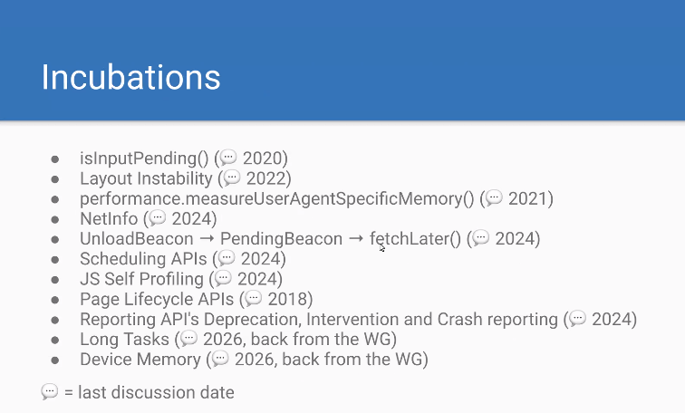
- ... Diverse set of topics
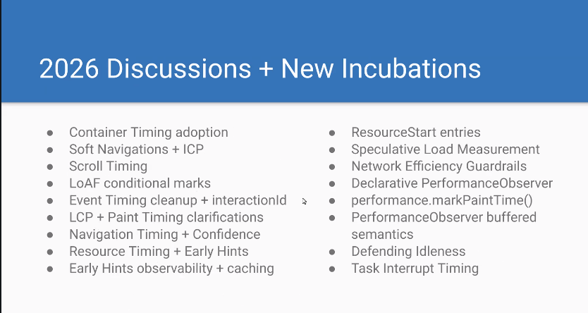
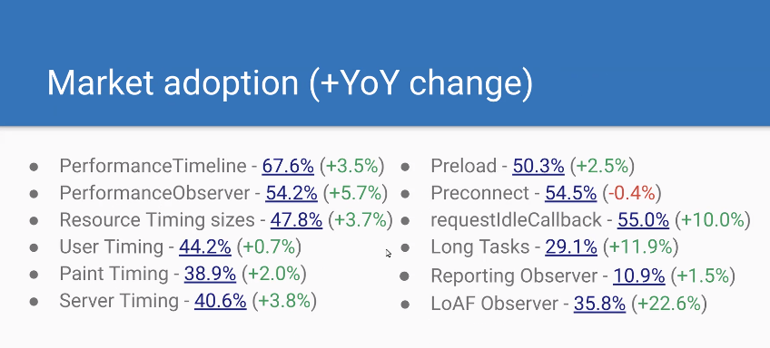
navigationStart may expose cross-origin timing information
Slides:
Summary:
- Security & Privacy Risks: Exposing startTime on navigations involving cross-origin redirects can leak sensitive timing data and redirect existence (Issue #160). The Navigation Timing exposing cross-origin redirect times outlines options to resolve this, leaning toward mimicking WebKit by hiding timestamps prior to responseStart for cross-origin redirects unless the destination origin explicitly opts in (e.g., via TAO).
- Dashboard & Interoperability Trade-offs: Altering time origins or obscuring timestamps presents trade-offs between breaking existing developer performance dashboards and improving cross-browser consistency and security.
- Next Steps & Follow-Ups: The group concluded to move forward by ensuring requestStart is always non-zero, updating documentation, and evaluating a potential transition period to allow the ecosystem to adapt before altering timeOrigin.
Minutes:
- https://github.com/w3c/navigation-timing/issues/160
- Yoav: Bring to a conclusion this issue
- ... Cross-origin timing information from fact that we expose startTime at all for navigations that include cross-origin redirects
- ... We don't want to lose redirect timings
- ... We don't want to expose existence of cross-origin redirects at all, and various information that can be exposed from just the timing of them
- ... WebKit issues around this, WebKit is nullifying-timestamps when cross-origins are present, avoids that leak in WebKit
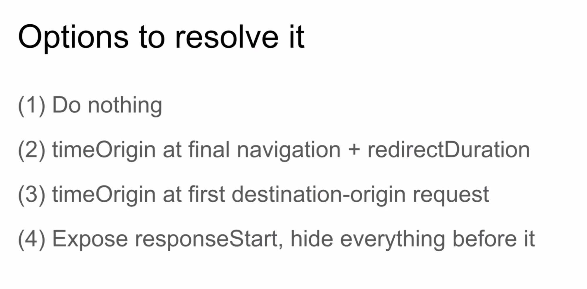
- ... 4th option is to mimic most of what WebKit does, hide all timestamps before responseStart in time of X-O redirect
- ... Only expose responseStart unless there's an opt-in (enable redirectCount for X-O if there's an opt-in to destination origin)
- ... TAO into destination origin exposes redirectCount
- ... (4) is the only viable option, the other three have compat issues
- Michal: Why is 4 the only option?
- Yoav: Other options would change all other dashboard baselines
- ... Would require behavior changes
- ... Before TAO opt-in we settled on no-referrer policy
- ... Match same behavior here
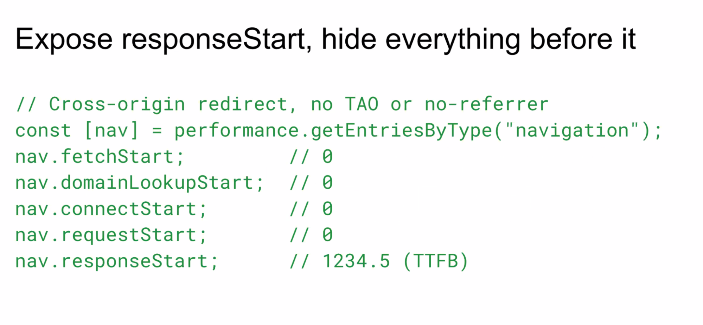
- ... responseStart keeps TTFB
- ... Can RUM providers live with this data loss
- ... WebKit can we expose responseStart as it's essentially exposed already
- ... (could do this with HTML JavaScript time measurements)
- Bas: Unclear to me, it feels like responseStart exposes information of redirect time
- Michal: Plus RTTs plus everything else
- Bas: Let's say you zero out responseStart as well, what is the way to get the timing
- Michal: Current timeOrigin is the only way to get this value at the moment
- ... Status quo today in all browsers
- Yoav: I suspect it wouldn't happen, because current start time is so ingrained
- Michal: Hiding destination origin's TTFB, by muddying it together with total redirect time, in order to make it blurry
- ... Goal is to find out unexpected TTFB, don't know if it's controllable sources or not
- ... requestStart to final destination origin, even more narrow band around redirects
- ... Tradeoff is break dashboards + expose redirect time
- Yoav: Lose TTFB of destination unless X-O redirects opt-in, then you get all timestamps you do today
- Bas: Can we expose compat risk with additional field, exposes timing we care about for same-origin portion
- ... Option (3)
- Yoav: If you expose that plus what we have today, you're exposing X-O redirects
- Ben: Any motivation for X-O redirectors to opt-in to this
- Yoav: We have a separate session on that, there are multiple types of X-O redirectors, with my Shopify hat on, we own multiple components that get redirected through (e.g. tech debt), we want to measure all the components here
- ... For traditional redirectors for ads and search, maybe less incentivized
- ... We also need a mechanism to give that information directly
- Ben: For Shopify use-case would you care if that went to a non-Shopify domain (only share with X domains)
- Yoav: Explicitly sharing with destination origin TAO: destination.com
- ... Whether we would care, I haven't done a security analysis for e.g. TAO: *
- ... Some are slow, some are fast, right now I don't think anyone knows which is which
- Michal: Right now redirectStart/End is a single opaque block
- ... Start w/ assumption we can't share because of X-O redirects
- ... Is that a no-go? Could we not do this?
- Noam: WebKit does an obfuscation of these values and it helps in ~5% of cases, and you have same-origin and X-O together and it hides that bit
- ... If we don't do that thing, then we know about the time spent in X-O redirects, and all the rest is to hide the edge cases
- ... We can do it if it makes people happy and brings to interop
- ... Showing just responseStart and not requestStart
- ... Main problem is interop, same baseline
- Alex: We have no reason to hide when final request to final server started, if there's no information about whether that was redirected or not or timing before that
- Michal: But there is now because of difference between fetchStart and navStart
- ... You can approximately measure that on the server
- ... Send data from server's timing to client
- Bas: Communication channel between origins
- Michal: If you make them wait
- Alex: Timing of e.g. taking a long time if you're logged in vs. short time if you're not logged in, is the threat model
- Bas: Is the threat model big enough?
- Noam: I think so
- Michal: The options would be to move timeOrigin, or?
- Noam: Or to not?
- Michal: If you don't move timeOrigin, and you'd just expose responseStart?
- Noam: Can't really hide it
- Bas: Someone we can consult with more?
- Michal: UNO talks cover?
- Yoav: With opt-in
- Alex: I think this year WebKit exposed timing with TAO opt-in
- ... With regards to changing timeOrigin, would there be appetite for a transition period, where we expose both times, current timeOrigin and what we're moving to, correlate the two, give them a chance to move at their own pace, then remove timeOrigin
- Yoav: Option 5
- Barry: You can have a slow load time and report it as better
- Michal: You wouldn't on day one, after 2 years everyone would adjust
- Yoav: At the same time we could expose more information via opt-in
- Barry: If I move from one CDN to another, my performance goes through the floor, says things are better, if I go through redirector 1 (2s load time), redirector 2 (7s load time) looks wonderful, you're oblivious
- Michal: Subparts would be ideal
- ... Would not pick a redirector that opt's in
- ... For security and interop things, that's covered. From developers, if you cover all of the time, when it jumps it's hard to know. Hiding requestStart and put it into one box, it's hard to know if it's your own team or something external.
- Barry: Lost visibility of sudden jumps
- Michal: Gives value you want now, creates a new problem, redirectStart/End that changes according to current definition, negative timestamps completely
- ... Or add a new ones, just durations
- ... Two years from now we'd have to see if ecosystem is moved
- Barry: I just dislike the idea we're getting different results for different things
- Bas: Fundamental consequence to solve threat vector
- Yoav: This will equalize results, plus time info about redirectors
- Barry: Happier with that, we're more consistent
- ... timeOrigin moves for everyone
- Michal: LCP candidate value which comes from value of timeOrigin plus redirect times
- Barry: I have a slow TTFB is that redirect time or etc
- Ben: Talking about multiple pieces of the ecosystem here, many people doing their own measurements
- ... There's this new confusing other start time
- ... Worried we have two values, two confusing values forever
- ... What's possibility we'll be able to remove it
- Barry: We tried to change firstInterimResponseStart, Chrome moved first w/out agreement, we changed our mind and moved it back, we should have gone with interopable way
- ... If you're Chrome between versions X and Y, before that not moved, any other browsers not moved, etc.
- Yoav: After 2 years we kill the old one
- Barry: After 2 years the timeOrigin would have to change
- Barry: We moved Chrome and not CrUX, and not Lighthouse
- Ben: ~2 year window, thinking of other compat changes over that timescale, it requires coercive, "no new API features", warnings, etc.
- ... Not enough time, you won't be able to reach out to everyone
- Michal: Conclusion so far: Either this is just security theater, let's do resolution we came up with and it's interopable. If we find out there's a true concern, we can move dashboards and tools/etc.
- ... Not sure if we'll have energy for that effort
- Bas: Shows impact of threat
- Michal: Valuable for developers, we cleanup and add value
- ... Allows measuring things of just my own realm, plus redirect changes
- Barry: If we are doing this, we add a new flag, or detectible
- Noam: An attribute of PerformanceTimeline or a particular PerformanceObserver
- ... What we could probably do is say new features when PerformanceTimeline is configured
- Michal: Start time of DOM load etc. all change
- Yoav: What's probability of us succeeding in this, how much do we want to
- Michal: What's probability of starting 2 year window, we expose requestStart, it resolves interop issue
- ... Second is there a real problem with timeOrigin today
- Bas: One advantage of proposal if it it turns out threat vector is bad, and problem requires us to stop exposing redirect information, we have an alternative already
- Ben: Proposal to WebAppSec, how close is the ecosystem to solving all "are you logged in" oracles?
- ... If you could somehow gate timeOrigin
- Michal: If you expose responseStart of the final document, the opportunity over 2 years to segment everything before responseStart
- Barry: That time has multiple other things in there, ServiceWorker, TLS, same-origin redirects
- Michal: New proposal is (5) we get requestStart non-zero always
- ... Other timestamps in NavTiming
- Barry: Those are all before requestStart
- Yoav: No point in obfuscating one but not others
- Michal: Expose all values, make an effort to update documentation, if we ever need to move timeOrigin (we need a new mechanism, we need to expose redirect times), now in a better position to do that
- Alex: Sounds good, having a transition period
- Yoav: Interop issue at the moment, is WebKit doesn't expose any of these timestamps in X-O.
- Michal: Add requestStart, maybe fetchStart
- Alex: We should expose those if it's the final domain's first
- Michal: Without TAO opt-in
- ... There's currently a gap, that's no needed
- Alex: Once you're in the final origin redirects, there's no need to hide final information from yourself
Declarative Performance Observer
Recording:
Slides:
Summary:
- Proposal & Origin Trial Findings: Shunya presented a Performance-Observer response header that, together with Reporting-Endpoints, lets the browser collect and report entries without JS. It covers blind spots such as early network failures, abandonment before JS runs, and process crashes; with capture-early-failures, failed navigations are stored and flushed on the next successful one. The Chrome OT found the 640KB client buffer was enough, but payloads ran into server-side collector size limits.
- Discussion Points: The group agreed the Reporting API needs compression and that the earlier cross-origin compression concern no longer applies. Prefix matching for User Timing names was seen as useful, but an allowlist that is a subset of the JS-enabled entry types was preferred for now. Other topics were server correlation (reflecting Server-Timing or an id directive), annotating session end, zeroing unreached timestamps on failed navigations, and handling consent via collector filtering or a consent-cookie-gated header.
- Next Steps & Follow-Ups: The session ran out of time, and Nic asked that discussion continue on GitHub. Planned follow-ups: a Reporting API PR adding content-encoding (w3c/reporting#62); explainer updates for sessionEnd, flushing on page hide, and the entry-type allowlist; and continuing the Chrome OT through M161 while incorporating WG feedback.
Minutes:
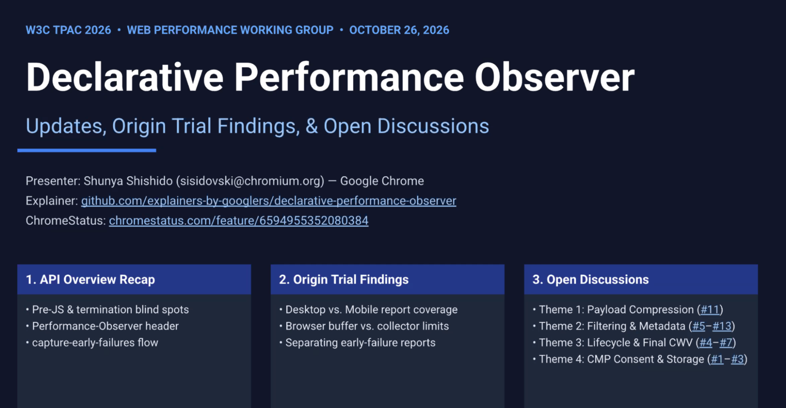
- Shunya: wanted to share API shape and OT findings
- … telemetry relies on JS, leaving blind spots - early network failures, pre-JS abandonment and abrupt process termination
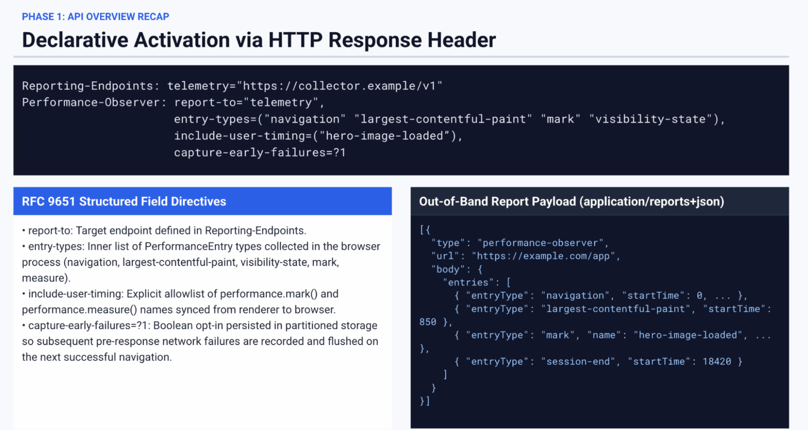
- … define the reporting endpoint and a Performance-Observer header that defines what entries should be collected
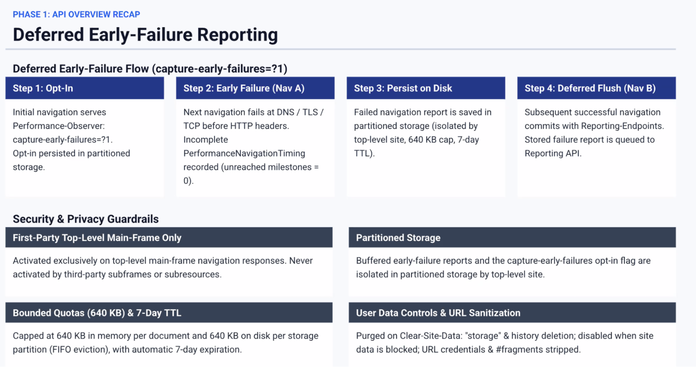
- … when capture-early-failures is enabled, the browser saves the failed navigation and flushes it on the next successful navigation
- … Bounded quota and 7 days TTL caching
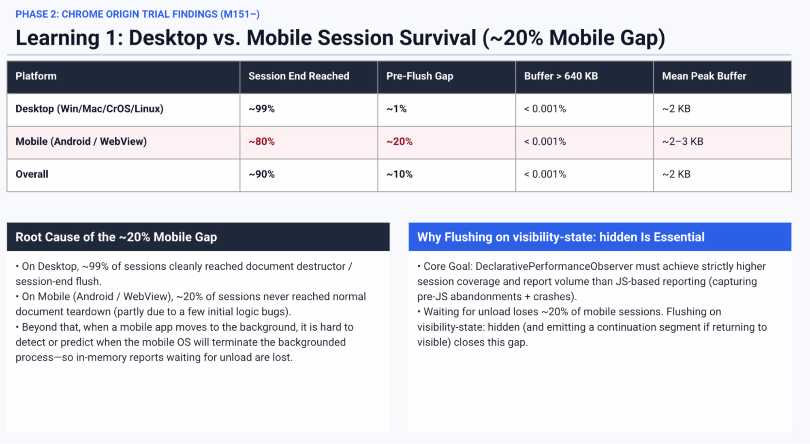
- … want to make this API more reliable so thinking if the report can be flushed more frequently
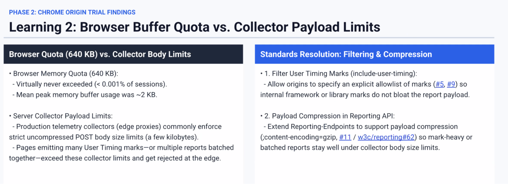
- 640KB was sufficient on the client side, but hit server-side payload limits when collecting a lot of data
- Decided to filter user timing and should add compression support to the reporting API
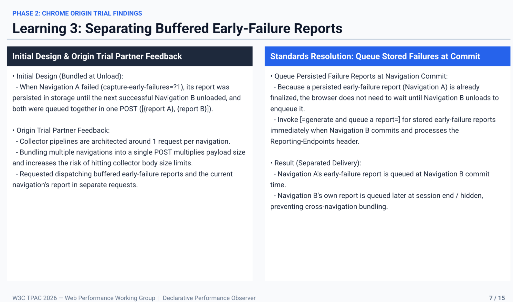
- Also decided to separate early failure reports
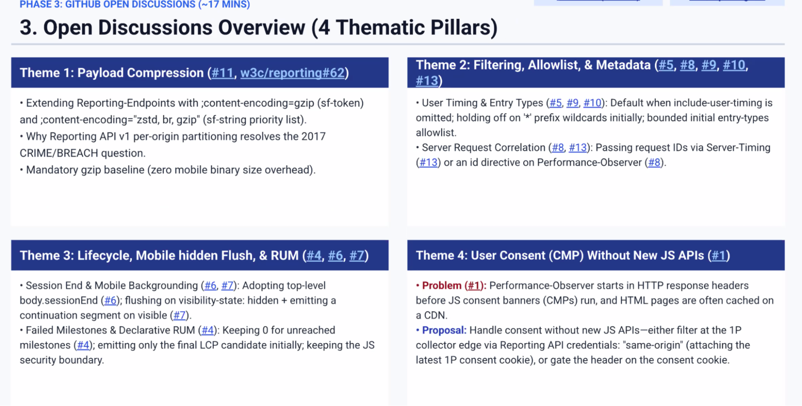
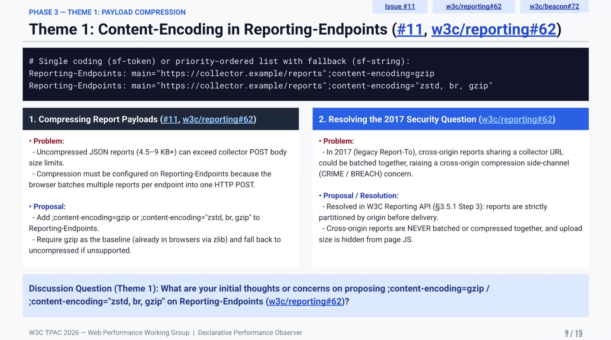
Need ability to compress the reporting APIs in general- There was concern about cross origin compression side channel, but it’s no longer relevant for the current reporting API.
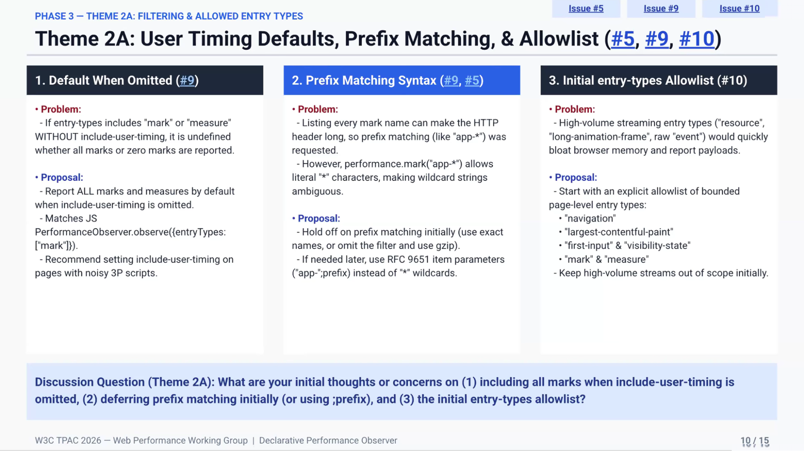
- Makes sense to have prefix matching for user timing entries. Maybe should use parameterized headers to define that.
- But wanted to keep it simpler for now
- Can start with a simple allow-list that’s a subset of JS enabled entries
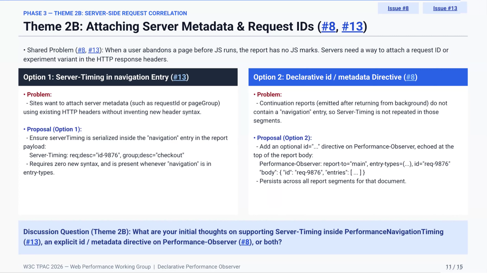
- Maybe we can reflect server-timing to enable server correlation with the reports, or maybe an ID directive
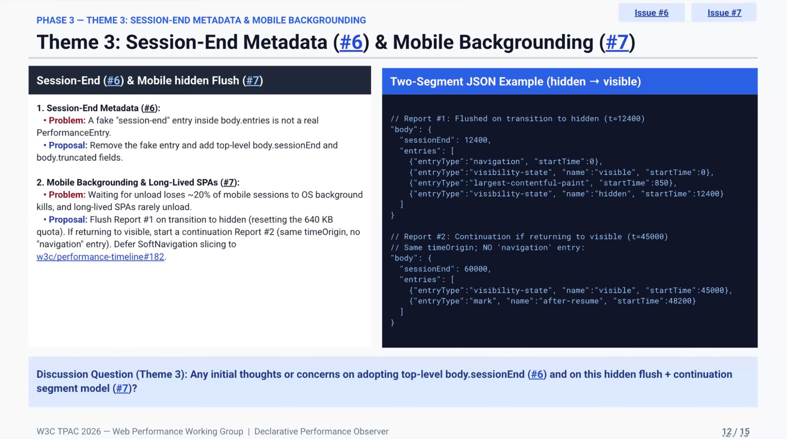
- Wanted to annotate the session end
- For failed navigation, we set timestamps after the failure to 0
- What happens with user consent? Proposing to filter at the collector or gate the header on the consent cookie.
- Nic: out of time so let’s continue discussion on GH
Resource Start entries
Recording:
Slides:
Summary:
- Proposal & Motivation: Matt (Shopify) proposed a resource-start PerformanceObserver entry, linked to the completed ResourceTiming entry by a resourceId, so pages know which loads are in flight. The goal is to determine when a navigation is "done", since about 80% of Shopify navigations are soft navs. Wrapping fetch()/XHR misses HTML and CSS loads and conflicts with other wrappers.
- Discussion Points: Bas questioned the value of a start entry delivered with Performance Timeline latency, and Michal and Yoav pointed to takeRecords() for synchronous access. Barry, Michal, Ben and Bas noted the underlying need is a "page is done loading" signal, recalling that past onload/TTI efforts struggled. Nic confirmed that RUM providers in general want this.
- Next Steps & Follow-Ups: Pivot to an opt-in that fires ResourceTiming entries twice (at start and at completion) instead of adding a new entry type. A resource ID is still probably worth having, as a separate question.
Minutes:
- Matt: Outputs of previous discussion on this proposal weaved back in
- ... Add a new entry to PerformanceObserver, understand when a beacon starts to load
- ... ResourceTiming added after the entry completes/fails/cancelled
- ... Aren't notified when it's kicked off
- ... At Shopify we want to measure Navigation duration within an application, to know when it's complete
- ... About 80% of our navigation are soft navs
- ... People will load the app and sit in there
- ... We try to introduce some heuristics, i.e. if we no longer see relevant loads in progress to see if a page is done loading
- ... Want to filter out some subrequests that don't matter for a page's navigation
- ... Another piece is this monitoring shouldn't block navigation or rendering, can be delayed -- just want to measure UX
- ... Workarounds: Wrap fetch(), XHR, etc. Only gives us a subset of loads, HTML+CSS is missing. Wrappers need to co-exist, competing with each other, collision
- ... Being able to instrument service worker, and working within application
- ... Introduce ResourceStart entry - for each resource that begins, it'd be paired with complete ResourceTiming
- ... Shared resourceId paired with entries
- ... Can use URL+timestamp? With timestamp it's possible with repeated events to share the same start time
- ... e.g. repeated POSTs at the same time, it'll get the same start time on matching URLs
- ... resourceId seems reliable way to unique identify pairs
- ... Includes loads from SW
- ... Alternative API designs
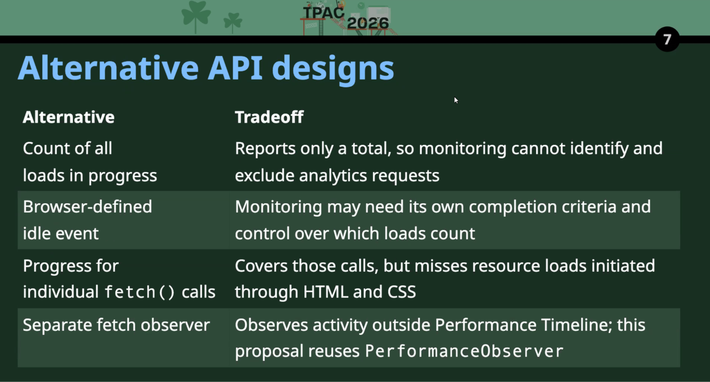
- ... Reporting on just total number of loads, could be limiting vs. entries (can't exclude analytics)
- ... Browser-defined idle event: Consumer or PerformanceObserver will want to provide its own heuristics
- ... Progress for fetch() calls doesn't give observability into HTML/CSS loads
- ... Separate fetch observer, happens outside of Performance Timeline
- ... Using:
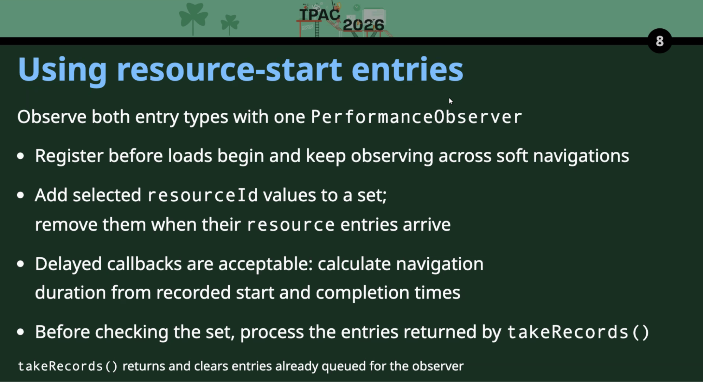
- ... Observe both entry types in one PerformanceObserver
- ... What API could look like:
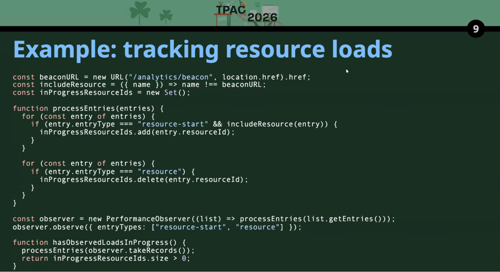
- ... Shows how you could ascertain this data, vs. previous alternatives
- Bas: We don't need this information instantly, but if you don't get it immediately, it doesn't give in-progress data accurately
- ... Is there value to resourceStart entry if it's reported at the same time as resource end
- Matt: If there's a little bit of lag, it doesn't need to be instant delivery
- Michal: Mechanism to know if it's PerformanceTimeline latency, you can also observe marks and file your own marks
- Yoav: You can also .takeRecords()
- Bas: PT is a finite resource, everything added we make it more chatty
- ... Could be achieved through serviceworkers
- ... You'd have to buffer them for every site you load
- NoamR: For alternatives, instead of "count of all loads", "give me all loads"
- Yoav: Then you have to poll this
- Noam: Sounds like what you're after is a load-in-progress, but this is an after-the-fact delivery
- ... Status at a point in time OK?
- NoamH: Is it understanding when you have requests in progress, Observer-style may not be right pattern
- Matt: We're not looking at just resources
- ... When soft navigation start, we look at events, having a quiet-window algorithm, state at idle
- ... If we rely on resourceEnd, we don't know how long to wait for that, unless we give up at a certain amount of time
- NoamH: Acting on, or reporting?
- Matt: Reporting, this page took 3X seconds to load
- Barry: Why not use DOMContentLoaded
- Nic: Soft navs
- Matt: Could be supplemented with Soft Navigation browser primitives
- ... LCP on Hard Navs are good signals but don't tell you when the page is finished
- Barry: Lots of webpages are very chatty anyway (while onLoad isn’t that useful), how to exclude less relevant entries?
- ... Seems very messy to have to link it up
- ... A new RT entry, could be nice to have a direct link to RT equivalent, or a still-in-progress boolean, so you can change attributes
- Michal: Mentions soft navigations a bunch
- ... Narrowly-scoped proposal, maybe a way to polyfill soft nav measurement
- ... Soft Navs are tied to specific user interactions, don't chrome measure your own concept for Soft Navs
- ... Maybe navigation API if you go through that path, not pushState, but use NavAPI, report on those navigations
- Yoav: This is about defining the end of navigations (soft or hard)
- Michal: Could consider resurrecting TTI
- Matt: TTI plus Page-is-Stable
- ... From user perspective is it usable vs. is the page is done working
- Michal: LCP is a good default, talk on Container Timing, could contribute
- Matt: With our heuristics, this would simplify a lot of custom code
- Bas: After the page is loaded, we want to report on different things.
- ... If I have start ones, I can't know when the page is done loading because of in-progress
- ... It looks to me, the second thing here, is what you're looking for, when is the browser done fetching things for the page such that we can consider it fully loaded
- Matt: We blacklist certain operations, come from this URL and we'll wildcard XYZ
- ... Building to be a generic system that works for engineers
- ... Give me the list of open requests
- NoamR: Observer option to give me entries not when they end but when they start, PO option
- ... Entries get updated over time
- ... Callback can give you a hint they've been modified
- ... But might want to .getCurrent() thing
- Matt: Only one event for resource, but it comes in for the state
- Michal: Cleaner and easier to get new entry
- Barry: VisibilityChange state event, where you'd poll for outstanding
- ... PO that gives you "resourceTimingChangeEvent" or something
- ... Then .getCurrent()
- Nic: event would be cleaner, as it’s delivered immediately. If you’re waiting long enough where the resource ended, should it be delivered
… Otherwise +1 for what Matt is saying. We did the same thing in mPulse just to figure out end of navigation, which is all our customers cared about - … RUM providers in general want this. Customers would give us deny lists
- … Notified as soon as the resource starts to see when it ends
- Michal: Remember navigation timing can be polled for changes, and get a callback for changes
- NoamR: Only at the end
- Michal: Can we do that as an opt-in for RT?
- NoamH: Discussed in the past but folks pushed back on it
- Yoav: I think we don't need to buffer any of those
- Bas: There could be existing entries on the page
- Yoav: If we have multiple calls per entry then it'd be simplified
- Michal: With this new flag you'd get one when request is started, then another callback when it's done, map, remove when it ends
- NoamH: Would that include streaming requests
- NoamR: Would end when request is complete, when body is done downloading
- Michal: An open-and-alive request would be blacklisted or timed-out
- ... fetchObserver would have detailed events
- Ben: Special-purpose API for load-is-done, better signal for users (spinner), mysite defined-as-loaded signal to browser
- Bas: Reason people want a version of onload, blacklisted some parts of onload
- Yoav: Also works for Soft + Hard Navs
- Bas: Having that would be nicer for web devs than frameworks, construct thing based on RT entries
- ... Also means that if you have any accuracy you do want delivery
- ... Proposal for entries works fine for me, fire it twice and adjust is OK
- ... Actual problem needs solving isn't addressed that well by it in my mind
- Barry: We tried this before with onload, TTI
- ... Not sure we can get a reliable signal
- Yoav: Browser can give signal
- Michal: Part of issue with TTI, it was a backwards-facing thing, going from idle-to-not, etc
- ... Abandonment would always come first
- Nic: these signals didn’t take the developer input into account
- Bas: Not convinced that the signal is that reliable. Maybe want an API to get an aggregate signal from the browser? It’d more accessible to developers
- Ben: New resource timing option sounds useful. Would be interesting to get a signal from the developers about the things they don’t care about
- Michal: For those who want to control the metric, this seems like a useful addition. Do you like the proposal?
- Matt: as long as the use case works
- Michal: Useful primitive, but helping the browser define TTI is less useful. So the only solution there is to focus on the user experience. The user doesn’t care about network requests.
- … we’d need to expand beyond LCP to more visual load metrics
- Matt: From Shopify’s perspective, this is what we care about. And then want to understand “why” in the wild and get that info from users and observe the timeline and understand what events lead to it
- … We have golden metrics
- Michal: most people don’t want to roll their own
- Matt: Would also enable measurement across apps
- Alex: If we expose a way to say what resources are currently loading, would there be a followup to get %ages of download happening? Would devs need more information?
- Matt: Don’t care about interim state, but somebody may want this
- Nic: For mPulse we didn’t need more than a boolean
- Ben: Primary use case is RUM, but maybe also changing client behavior when reaching client state. Given that PO has delays, is that a problem?
- Matt: For current use case it’s fine. But could avoid e.g. extra work
- Michal: Could use takeRecords to sync get the entries.
- Yoav: Summary: Pivot to firing ResourceTiming twice with an opt-in
- Barry: Do we still need the unique ID then?
- Yoav: It's the same object
- Barry: Resource ID is possibly a good idea anyway, but orthogonal
Container Timing
Recording:
Slides:
Summary:
- Status & Proposed Changes: Jase reported implementations in Chromium, Firefox and Servo; the Chromium OT has ended, and RUM Vision and GitHub adopted it during the trial (GitHub replaced its in-house solution). Changes since the OT:
- Stop recording after scroll or interaction, and drop intersectionRect.
- Rename attributes to LCP/FCP-style names.
- Add an element.getContainerTiming() getter for the latest entry.
- Buffer one entry per container root, updated in place.
- Stress tests showed little to no overhead.
- Discussion Points: Shubham worried that reusing FCP/LCP names would confuse developers, and alternatives such as "ContainerLargestPaint" were suggested. Firefox and Chromium differ on re-reporting moved text nodes; Michal expects the Paint Timing cleanup to resolve this. Michal positioned Container Timing as the successor to Element Timing.
- Next Steps & Follow-Ups: Positive on the getter, the new entry interface, and buffer-per-container. Attribute naming is still open, and the text-node interop difference will be resolved through the Paint Timing "contentful" primitives work.
Minutes:
- Jase: Multiple implementations, in Chromium for a while.
- ... Firefox implementation as well!
- ... We also have Servo about 2 weeks ago
- ... Origin Trial in Chromium. Was in Chrome until 153, ended now
- ... Reached out, talked in RUM CG, RUM Vision is making use of it and encouraged more to use
- ... Able to time components now that they weren't able to before
- ... They're also stopping on interaction, and not emitting until size has increased to a certain point as well
- ... Github were just starting to use an in-house solution, wanting to do same thing, they wanted to time paint times of various components
- ... Using internal framework on Issue bodies, put a data- attribute on what they care about, listen on LCP performance stream, would make that container's paint time as that entry's paint time
- ... Would just fall back to page's LCP in some cases
- ... Github feedback thread in Github ContainerTiming repo
- ... ContainerTiming is a good match for their custom stack
- ... Higher percentiles it deviates more wildly
- ... [example with video]
- ... Changes since OT
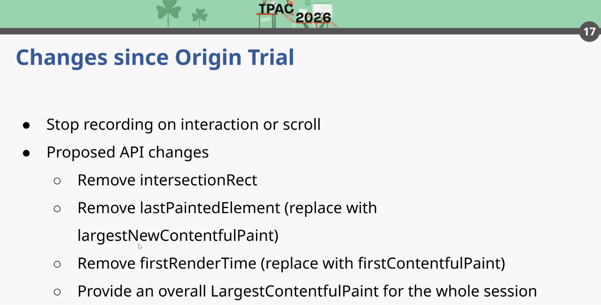
- ... Stop recording after scroll or interaction (problematic measuring afterwards, everyone else was already doing this)
- ... Removing interactionRect as it's not used, and not free to calculate
- ... Came from ElementTiming initially
- ... Removing lastPaintedElement, replaced with largestNewContentfulPaint
- ... Good way to look back at entry and see what caused it
- ... Removing firstRenderTime, replace with firstContentfulPaint
- ... Providing an overall LCP for the whole session
- ... IDL changes
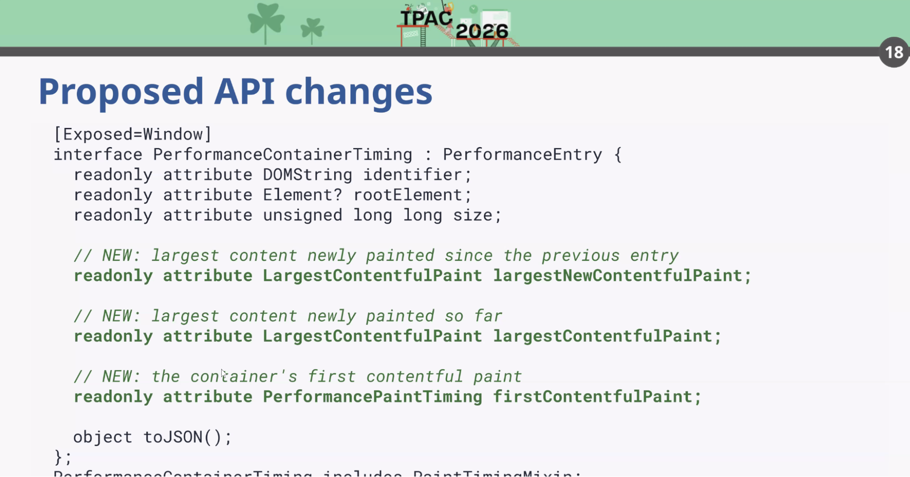
- ... Many people just want to fetch the latest thing and beacon it off
- ... Maybe we just have an API for that, rather than users listening on the event stream
- ... Proposal: getContainerTiming() assuming it's a root
- ... Similar to ICP, getLargestInteractionContentfulPaint
- ... Could help with memory
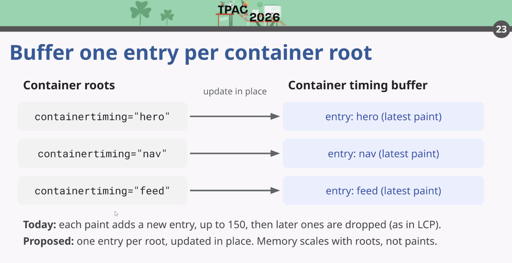
- ... Performance and stress-testing
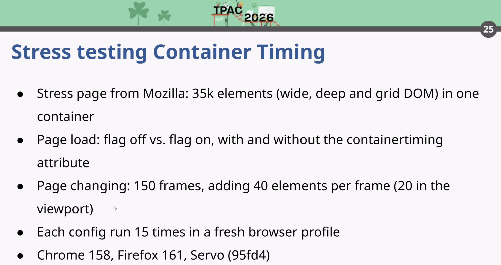
- ... Performance testing results
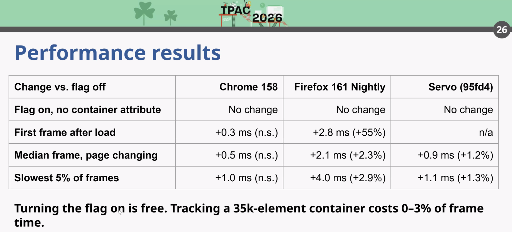
- ... Running on a desktop PC, specs
- ... Firefox slightly higher, a few optimizations haven't been made yet.
- ... Chromium is built on top of ElementTiming's APIs
- ... text node can only reported itself as painted as once
- ... With Firefox, text nodes will report multiple times
- ... Edge-case
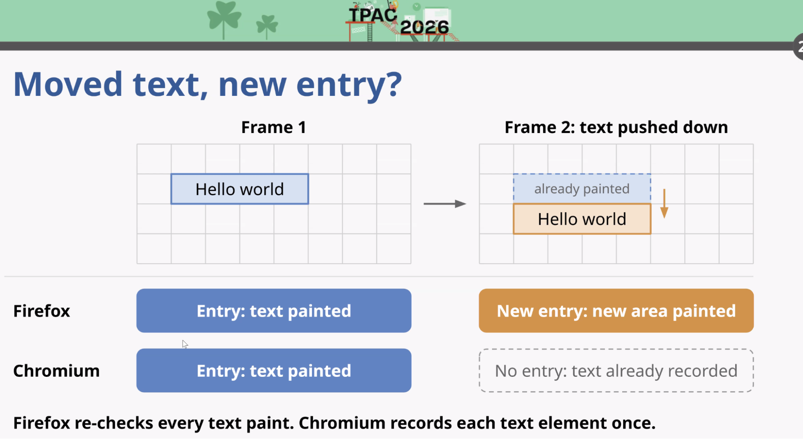
- ... I believe we can resolve this
- ... Discussion topics
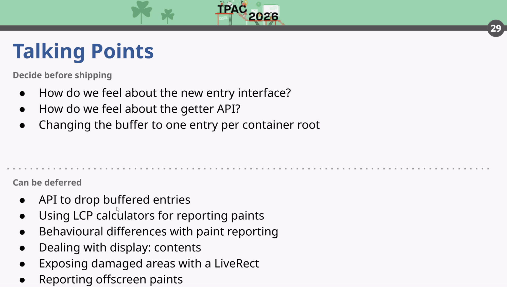
- Bas: LargestNewContentfulPaint is a naming change, lastPaintedElement?
- Jase: I believe you also want to use LCP object, right now it's just pointing to an element.
- Barry: LCP for page, and LCP for container?
- Michal: And new LCP candidate for each animation frame for each paint
- ... We don't have to call it that
- Bas: One entry for multiple text nodes, am I correct Chrome will report new area if there's a new entry for some reason, reported as part of surface area
- Michal: We're cleaning this up, PaintTiming topics later today, we can resolve this
- ... Way we do PaintTiming was tuned for consumers we had in the past, LCP and ElementTiming spec'd that text element paints, you can only take snapshots
- ... New set of consumers that cares of stream, Soft Navs and ICP, Container Timing, so we're flipping the primitives
- Bas: On perf impact, Firefox there's a NOOP if there's no CT at all
- ... But if you add a CT root somewhere on the page, it increases work for all elements on the page
- Barry: On buffer, if you go to one entry, do you get different PO events?
- Jase: One entry in buffer, you still get paints if observed, yes
- Barry: Buffered only gets the latest one
- Jose: Before we were similar to Firefox, any element in tree under CT root, when we did the paint it would escalate, we've done some work to reduce that effort
- ... This optimization has dropped the problem of paint O(n^2) complexity
- ... This will always have an impact, so the more events that get created need more effort to process them, but not having CT on many nodes is quite similar
- Shubham: As of now we populate FCP per document, so if we do this and break it down, if we have to track every container to populate both, it would be a lot of work
- Michal: I think we chose to use similar names, but we could use others
- ... We have PaintTiming, LCP reports that, a container also has its first PaintTiming. It keeps that around, not document's FCP or container's FCP. "ContainerFCP" or container's "initial paint timing" are the same
- Shubham: If we use same entry types then it's confusing, same names are not
- Michal: We wanted to borrow because it has the same attribute list
- Barry: I'm OK re-using the type, you get many LCP. Name of "LargestContianerCP" might be nice.
- Bas: "ContainerLargestPaint" and lose contentful
- Jase: If that's how you feel for Largest, same for first?
- Bas: I'd be inclined to drop "Contentful" there
- Bas: Getter on elements, I don't have knowledge or preference
- Michal: performance.getEntryByName() and ...byType()
- ... isomorphic, but convenient for developers, you could polyfill
- Barry: I've always wanted these regret not having them
- Jase: We wouldn't have the problem here, because we compress
- Bas: Not impossible you'd go beyond the buffered ones
- Ben: Impression there's differences in how browsers do these things, and they've changed over time in each browser
- ... Is there an interop problem?
- Bas: Largest is well-defined
- Michal: Hard for developers to walk DOM trees
- ... Different rendering flows, but at the end of the day, it shows the silhouette of the shape
- Shubham: For changing the buffer to one entry for container root, do we have any metrics?
- Jase: Not 100% sure how buffer works for ElementTiming
- Michal: Fundamentally you'll have fewer roots than leaf nodes
- ... Goal is ContainerTiming succeeds need of ElementTiming
- ... (maybe on path to deprecation)
- ... Strictly better, mental model developers want, buffers better
- Jase: Getting last entry, seem positive. New entry interface as well.
- ... Buffer-per-container idea.
Scroll Timing API - Noam Helfman
Recording:
Slides:
Summary:
- Proposal & Motivation: NoamH presented a scroll PerformanceObserver entry exposing duration, first-frame latency, checkerboard time, smoothness (framesExpected/framesProduced), source, target and deltas. It is deliberately not a general animation-smoothness API. Chromium development is behind a flag and not yet ready for testing.
- Discussion & Feedback: Firefox lacks the infrastructure to track this today (no official position). Ryosuke cautioned against assuming a 60Hz baseline and against the term "checkerboard", noting that partial paints don't fit a boolean and that off-main-thread scrolling can show white areas without missing frames. Michal flagged variable refresh rates and suggested exposing frame-to-frame latencies or a histogram, and separating compositor rasterization checkerboarding from waiting on the main thread.
- Next Steps & Follow-Ups: No formal resolution was recorded. NoamH will keep developing behind a flag and refine how variable refresh rates are handled, how partial or blank paints are represented, and whether to expose summary or histogram smoothness data.
Minutes:
- Noam: Follow-up from previous TPAC discussion and others
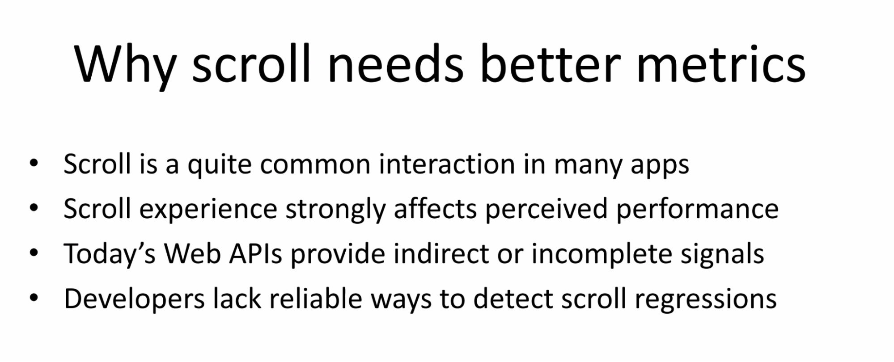
- ... Very hard to measure scroll
- ... Can measure aspects using existing APIs but it's clunky, hard to do accurately, not everything is available
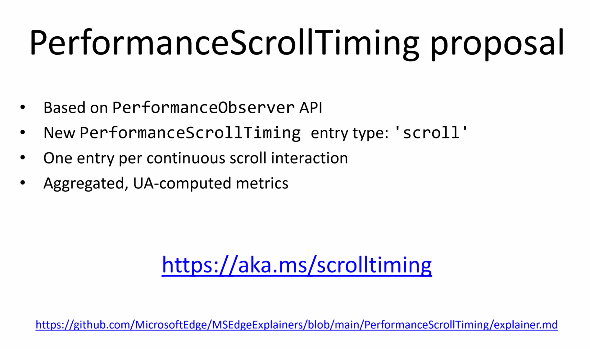
- ... PerformanceObserver w/ 'scroll' entry
- ... Exposes attributes around timing, stability, source/trigger and target
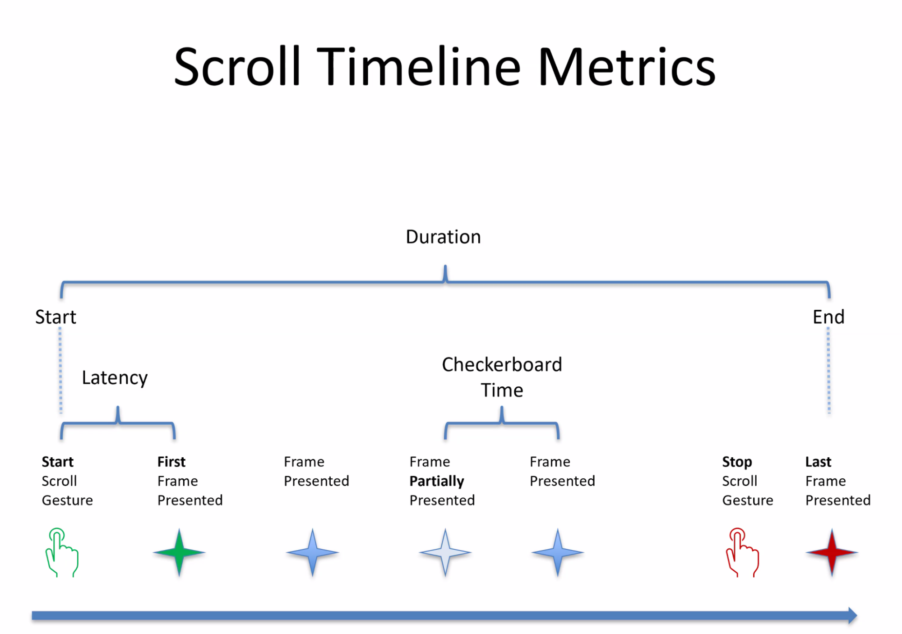
- ... Duration between start and end
- ... Latency between event timing and when frame was presented
- ... Checkerboard timing
- ... Two aspects that we should define clearly
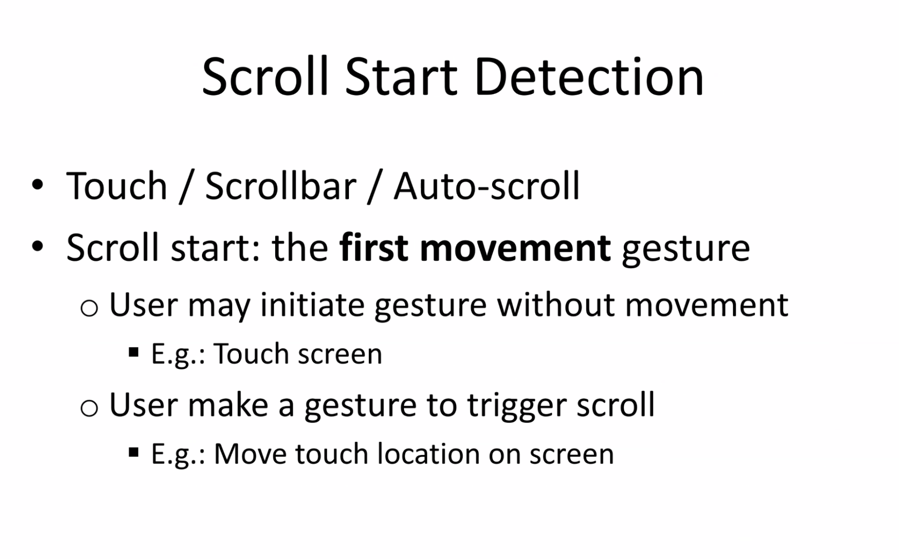
- ... When do we start? No current definition. Measure only when there's first movement
- ... Start a gesture w/out movement, e.g. touch screen and don't move
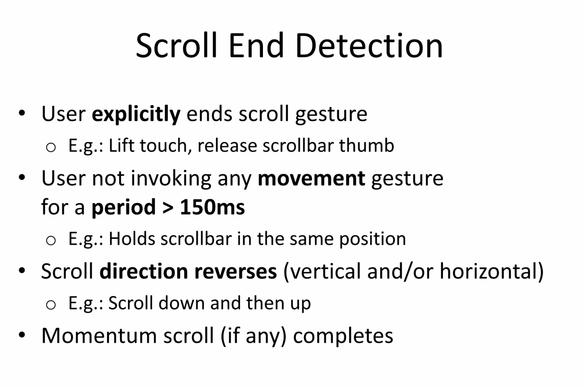
- ... Scroll End, user releases interface done to do the gesture
- ... When user pauses, stop measuring after some period
- ... Direction changes, or moment completes
- ... Consumption is similar to other PerformanceObserver patterns
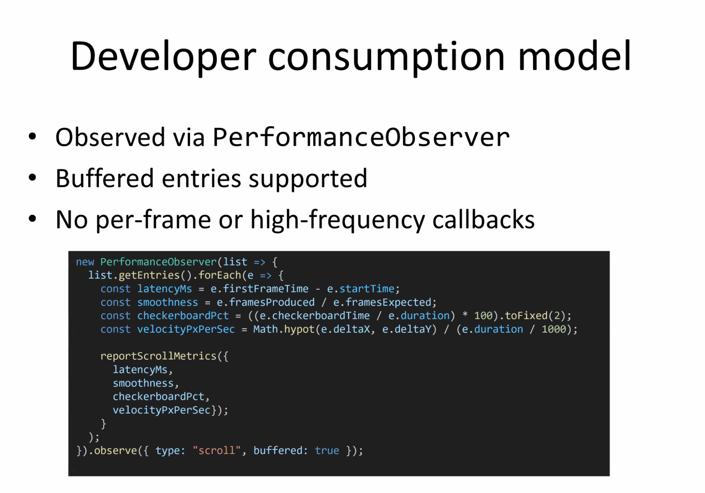
- ... Collect entries, collect different metrics you'd be interested in
- ... Not do a general animation smoothness API
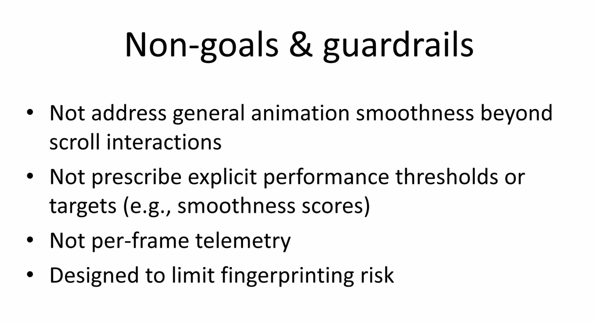
- ... Not prescribing guidelines
- ... Challenges with implementation
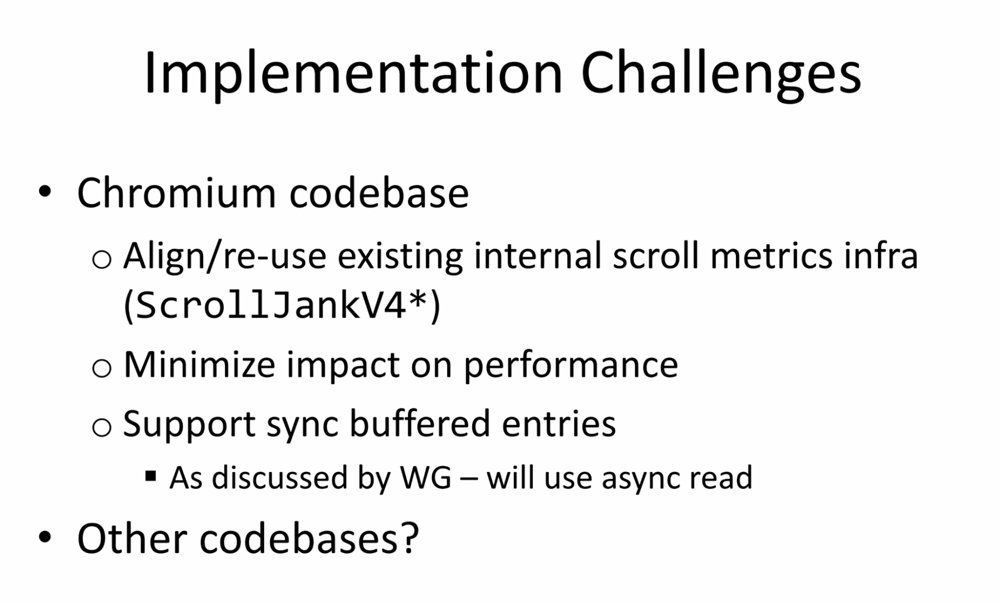
- ... Discussion points
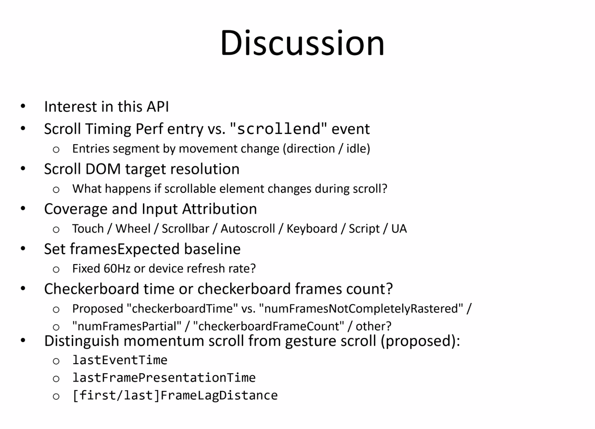
- ... Demo
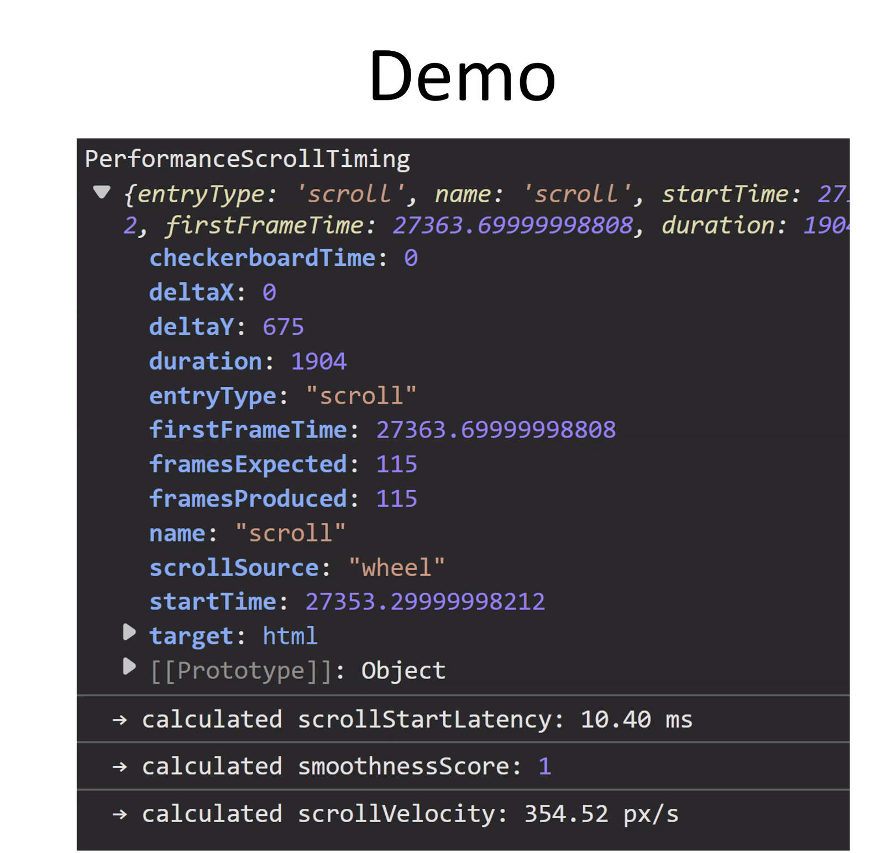
- … Not available yet, being developed behind a flag. Not ready for testing
- Michal: latest version uses infra that Chrome is using for a long time. There’s a mechanism to understand in the lab what values would be used
- Nazim: Currently no infra to track this in Firefox, which may complicate things. Overall an interesting API. No official signal
- NoamH: Started implementing everything without relying on Chromium’s infrastructure. It worked, but moved to existing infra for code health
- Nazim: the API feels similar to event timing, which ignores scroll and continuous events
- Michal: Not all that metadata is tied to a single event right?
- … EventTiming gives you the initial gesture
- NoamH: depends on which type of gesture. Also won’t segment on movement
- Michal: If you have jank on the page that prevents scroll start, event timing can help
- Nazim: sounds interesting
- Ryosuke: 60hz may not be the baseline on some devices
- NoamH: would framesExpected would be the smoothness baseline? E.g. at least 60 frames. I guess that in some cases 60 is not enough
- Ryosuke: should avoid calling it “checkerboard”
- NoamH: the concept of partial frames exists in all major browsers
- Ryosuke: paint the tiles off the main thread
- NoamH: yeah, but not with the full content
- Ryosuke: cases where 95% painted vs. 5% painted. May be a challenge if we just expose a boolean
- … in some cases we never miss the frame, we just have partial paints
- NoamH: in Chromium there’s a fallback to non-compositor scrolling
- Michal: happy to see focus on scrolling
- … for dropped frames, variable refresh rates are one issue
- … but an earlier version of this in Chromium effectively hallucinated frames
- … But frame to frame latencies and high percentiles outliers
- … frame rates per time are easy to define
- … It’s going to get worse, but exposing a subset of the histogram feels simpler
- Ryosuke: depends on how your scrolling is implemented. Off main thread scrolling never missed a frame
- NoamH: but main thread blocking JS that’s responsible for drawing the new content results in blank spaces
- Ryosuke: not a latency issue
- NoamH: smoothness would be great, but UX would be bad
- Michal: didn’t realize you want to measure latency from main thread updates
- … janky main thread would impact scrolling
- Ryosuke: scrolling would happen, but you’d see white
- Michal: Can we define latency as a way to drive updates but they need to be complete
- … There’s a type of checkerboarding where the compositor can’t keep up with rasterizing. A different one is waiting on the main thread for updates. The latter feels more common.
- … Internally we could summarize it as a perfect scroll or as less than perfect
Measuring non-interoperable times (e.g. style internals)
Summary:
- Problem Statement: NoamR raised the tension between interop and usefulness for implementation-defined values such as presentationTime, styleDuration and layoutDuration. Nazim relayed Emilio's concern that separate style and layout numbers can mislead about cause and effect. Michal and Scott noted that style and layout are increasingly interleaved (e.g. container queries).
- Discussion Points: Bas suggested a DevTools-like API for browsers to report the "bad things" they detect rather than raw times, though NoamR noted those wouldn't be interoperable either. Fergal distinguished UX-facing numbers from diagnostic internals. Jase and Bas worried that single-browser or non-interoperable data sends developers chasing red herrings.
- Next Steps & Follow-Ups: No resolution was reached. Yoav floated a combined styleAndLayout duration as more interoperable, and NoamR agreed. Bas cautioned that browser-specific forced layouts could still make that number differ.
Minutes:
- NoamR: about implementation-defined values in performance entries
- … presentationTime is currently one
- … styleDuration and layoutDuration is another
- … tension between interop and utility
- ... had experience in the past because a lot of jank can come from this system
- Nazim: Had a chat with Emilio, Firefox/CSS expert, concerned about granularity of this information because layout could happen due to the developer doing something silly in styling phase. Misguided from cause/effect.
- NoamH: Providing style and layout separately
- Nazim: One could affect the other
- Yoav: Style calculation vs. style
- Michal: More about interplay between style and layout etc
- ... Specifically for container queries, you don't do style resolution until you do layout
- Yoav: This accounts for that
- Scott: Same from Chromium side, style and layout are becoming more interleaved, but maybe that's OK
- NoamR: People want a clue towards optimizing my stuff
- ... This API is built as durations anyway
- Yoav: Nesting addresses this, sum of all style calcs that happened
- ... Point goes beyond specific bit
- ... How specified should these things be?
- Bas: Is a better thing, to have an API where browsers can send messages about the kind of thing they detect is bad
- ... What you'd be able to have in DevTools, should we have a generic API that's not so times-focused
- Yoav: Orthogonal to this
- Bas: For bad things particular to e.g. firefox, developers just want to know what they're screwing up
- Michal: Lease-interopable, but most useful
- NoamR: Error messages are not interopable
- Fergal: Both value in the sense that times don't really matter, these things tell you what the problem are
- Yoav: Having browser tell you you're doing something wrong, one of the things that inspired specific API where browser bug and font-based used causing bad style calcs
- Bas: Where are how do you measure this and report it in a way that's accurate
- Ryosuke: Different scenarios here, e.g. someone modifying a style and repeatedly doing that
- ... Not sure exposing just layout and style timing would be sufficient
- Bas: LoAF and we noticed XYZ happened
- NoamH: How would users use that message?
- Bas: Depends on the details of the message
- ... If we're agreeing those times are impossible to report in an interopable way, then we may as well report the most useful thing
- NoamH: Should we consider the fact that we now we have AI-based tools, interoperability may be less important because it's less hard to interpret
- Yoav: Differences between interoperability between running code and measurement output
- NoamH: You want consistency for deterministic code to process
- Yoav: I think it'll trip up agents if different semantics
- Ben: Depends on how website owner sets up agent
- Jase: From webdev perspective, if we're only getting this from one browser, how do developers approach?
- Bas: I don't like non-interopable times, browsers report different times for style/layout, might be chasing a red-herring because browsers are measuring different things
- Fergal: Some numbers are about UX, and some are about internals, you want them to look at UX numbers, and use other ones to understand what the problem is
- Yoav: styleAndLayout duration timestamp, vs. styleDuration + layoutDuration. First is more interopable?
- NoamR: More interopable, as part of standards
- Bas: If one browser did forced layout as part of X, then you'd get non-interopable numbers
Interop x WebPerf
Slides:
Summary:
- Overview: Michal explained the Interop 2027 process: focus areas are scored on WPT pass rates and need an existing standard with good test coverage. Selection happens before December 10, 2026, and the scope is published February 4, 2027. WebPerf candidates: cross-origin redirects in Nav/Resource Timing, NotRestoredReasons, 103 Early Hints, requestIdleCallback/Scheduler API, LoAF, Layout Instability, and JS Self-Profiling.
- Discussion Points: Ryosuke said WebKit backed out rIC four times because of page regressions. The Scheduler API has growing usage and partial Mozilla support, and Scott wants it upstreamed to HTML. Bas felt there was too little time to settle LoAF for 2027. Michal argued Layout Instability's API shape could be interoperable even if exact values differ. JS Self-Profiling has low usage (<0.1%) but heavy use by Office/Outlook.
- Next Steps & Follow-Ups: Fix and clean up WPTs for the WebPerf proposals (especially cross-origin redirects and NotRestoredReasons) to improve their chances of selection. Continue the 103 Early Hints discussion on Thursday. Pursue upstreaming the Scheduler API spec into HTML by about Q1 2027.
Minutes:
- Michal:
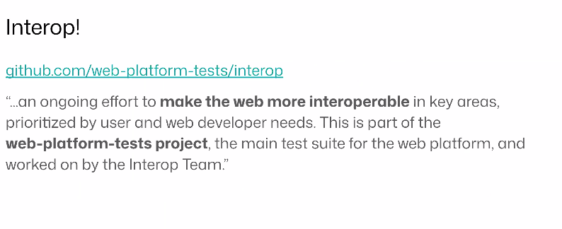
- … tests with any focus area
- … calculated based on test pass rates. Ultimately the project encodes a set of tests which is picked before the year starts
- … there are mechanisms to change tests, but it becomes harder
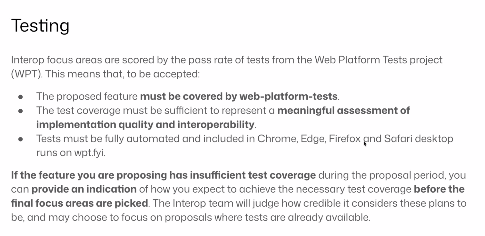
- … if these proposals are not good enough, that’s a lot more work
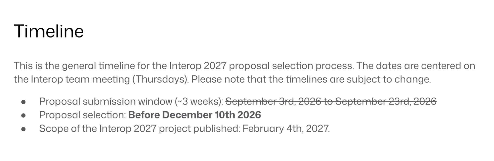
- … Proposals from this group - cross-origin redirects in NT and RT
- … The more we fix in these tests, the more likely they are to be picked
- … notRestoredReasons - everyone are failing outside of chromium. But need to look at WPTs and clean these tests up
- … 103 earlyHints - may not be ready. We’ll talk on Thursday
- Ryosuke: requestIdleCallback - WebKit tried to ship 4 different times and failed. Page regressions, where rIC was slower than setTimeout(0). Track a few metrics, e.g. DCL. Visually complete regressed here
- Bas: Sites can drive unimportant UI with rIC
- Michal: Scheduler API. Ramped up in usage, Mozilla shipped some parts
- Scott: Want to get this upstreamed to HTML
- Michal: Spec upstreaming you have until beginning of year or first quarter
- ... Weeks to do tests, months to do spec work
- … LoAF -
- Bas: Not enough time to figure out what is needed for Interop 2027
- Michal: LayoutInstability and last of Web Vitals, very useful
- ... Particularly useful as it's not correlated with other metrics, highly with how users feel about sites
- ... Proposed as a focus area by developer, investigation effort at best
- ... Chromium ships it
- ... For interop, getting exact same value -- but shape of the API is more interopable
- Bas: Spec doesn't specify what should be removed from considerations
- Michal: JS Self-Profiling API was proposed, which extends capability
- ... Adoption: high-value, low-usage
- Michal: New version (lazy mode) choose when to sample
- ... Old version wanted all costs upfront, then guaranteed to be paid
- ... New flavor is you allow to use it, low-usage
- Barry: <0.1%
- Michal: Inherently meant to be low usage
- Noam: Office/Outlook uses it extensively
- Barry: LoAF has taken some use-cases away
- ... When you want the full stack trace
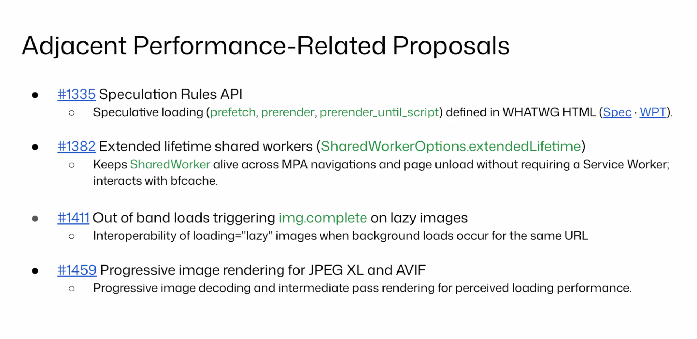
Extending Long Animation Frames to Detect Congested Moments in Documents and Workers
Recording:
Slides:
Summary:
- Proposal & Motivation: Joone (Microsoft Outlook) proposed extending LoAF to report "congested moments": periods when the event loop (main thread or worker) stays busy and tasks wait, even though no single task is long. It adds a scriptCount that includes entry points under 5ms. In the demo, 100 roughly 3ms worker messages produced one roughly 314ms congested interval.
- Actionability & Scope Concerns: Ben and Bas questioned whether a bare scriptCount is actionable. Suggestions were event classification, a cheap top-of-stack to spot floods of duplicate events, and sampling across users. Bas warned that much congestion may be harmless because Firefox interleaves input and paint, and he and Michal noted latency also depends on task priority. Matt and Michal described real cases where the signal would have helped.
- Next Steps & Follow-Ups: There was general interest but no agreement that LoAF is the right home. It "needs a better name", and Michal suggested it may need its own entry type. Feedback should go to the delayed-message-timing repo.
Minutes:
- Joone: extending LoAF to get congested moments
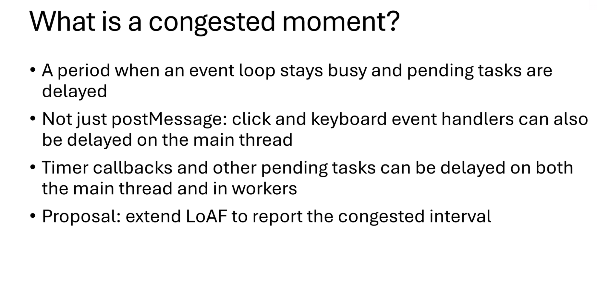
- … current LoAF is not enough because the individual tasks can be short, and rendering may not be starved
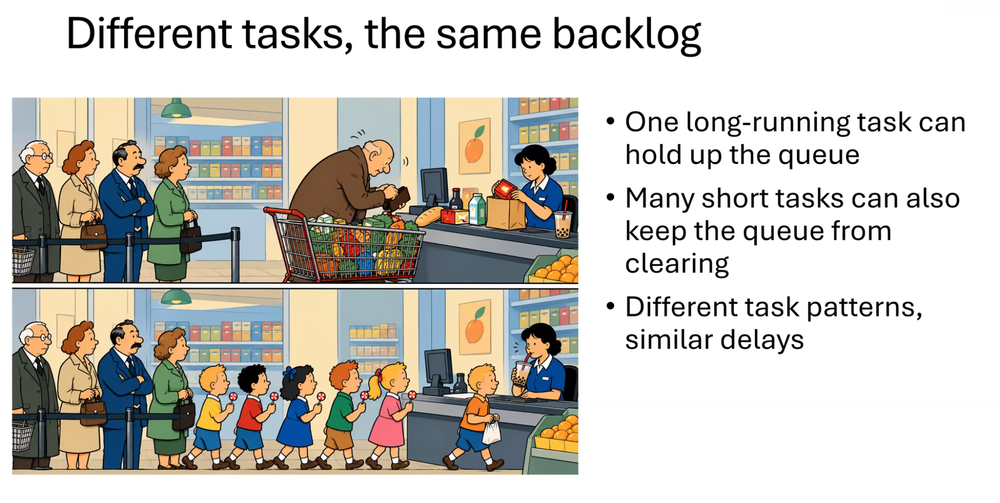
- …
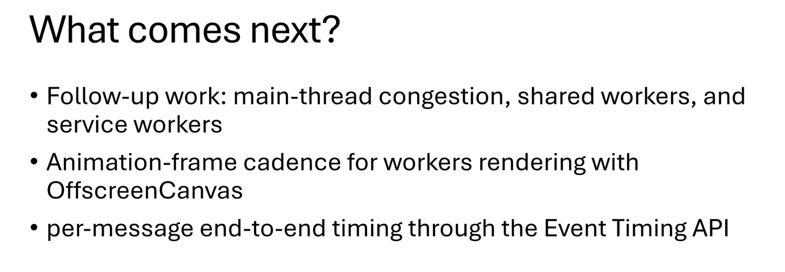
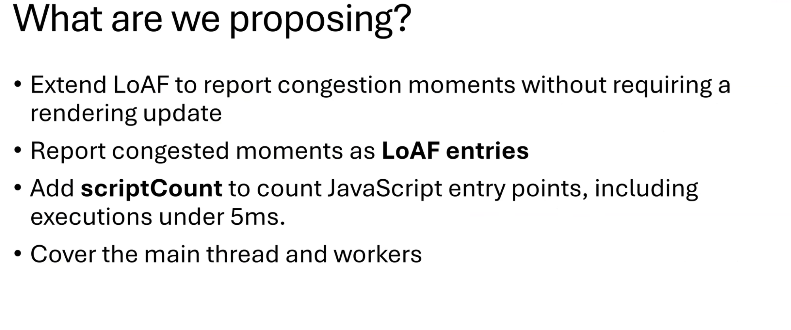
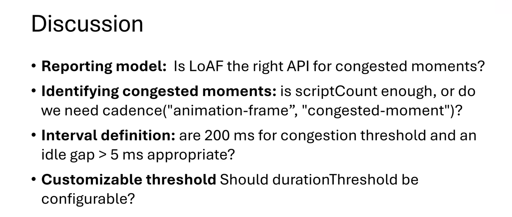
- Ben: If you get a report with scriptCount=100, how would I determine what they are so I can fix the problem
- Joone: Web developer could implement its own rate-limiting. postMessage()
- Ben: In use-case, there's a single message type that's queued up
- Joone: If there's a lot of messages, maybe browser can batch them up into single ones
- Ben: Would be useful to classify individual events
- Michal: LoAF chooses to have a 5ms threshold before it reports details about scripts themselves
- ... Always a cost to accounting work
- Ben: Or maybe some sampling of it
- Bas: When you detect congestion, you take a single sample for that user, in aggregate you get a flamegraph of what is causing congestions
- ... Once threshold is crossed, individual not helpful but aggregate helps
- Ben: What about...
- Nic: Uneven distribution of work being added?
- Michal: Snapshot with a lot of detail in stack, this is saying, detailed snapshot occasionally may not get the detail in this direction
- Ben: Give an option to profile
- NoamH: Can you not get wide information from profiler by sampling enough sessions
- Michal: This would give you the impetus to go doing that
- NoamH: Would eliminate really short tasks below 5ms
- Michal: How do you cluster in moments, there's also 5ms policy for any one script
- ... if that's above 5ms invocation, you'll get full LoAF, now we'll have total number of smaller ones, a way to report a cluster even if none are long, maybe list of entrypoint names?
- Bas: Eventloop is responsive, work is happening
- Yoav: A worker or lower-priority task can be starved
- Bas: In case of Firefox, when you have a situation like this like user input or paint, it gets scheduled in-between
- ... Those 300ms of congestion could've been perfectly responsive to user
- Michal: Only report top image when a single non-yielding execution thread is above 50ms (5ms for LoAF)
- ... More common on web, bunch of things in a row in-order
- ... Sometimes it's not rendering or latency we're waiting for, but it's in-app scheduling
- ... Browser will yield, but useful to know user is waiting for that processing to finish
- ... It's just metadata, and this app may choose to not have these moments
- Bas: 90% of congestions may be harmless and invisible to user, how do you know what isn't
- Ryosuke: If app cares about difference it can do perf.now() when scheduled and completes
- Matt: Experienced this problem when it blocks main thread for seconds, inundated with a lot of work 1000s of times, the user can't really do anything
- Yoav: Input events?
- Matt: Flooded with those events, input kinda works, PerformanceObserver, you wouldn't see long tasks but network requests are delayed by 1s+
- Bas: Prioritization failure on the UA, partially
- Yoav: Or something that scheduler.xyz() can make sure the kids don't have infinite priority
- Scott: Sounds like most useful when site is accidentally broken
- ... Cases that could be actionable vs. bursty sites
- Michal: End criteria of congested moment is "idle"
- ... Another potential is something was scheduled and it had to wait in line
- ... Growing latency from request made to when it was processed
- ... You could always be congested, but you're trailing behind
- Bas: Latency of a task isn't just a state of event loop, also on priority of the task
- ... Different latencies vs. medium or standard priority workload
- Michal: One of the top suggestions for events is don't hold the event for 100ms, do a bit of work and schedule follow-up, so the event could jump to front, yield back.
- ... Task priority could help, but then everything wants to be high priority
- NoamH: Not necessarily, background priority for specific tasks
- Matt: My issue -- unexpected behavior, didn't have analytics. Once we identified, we coded it more efficiently
- ... Bunch of line graphs that did line animations on load of page, animation frame for every frame for every graph. Did just one AF for all graphs
- Yoav: This reporting API would have helped us identify
- Matt: Yes, I noticed page is locking, etc
- ... I would have seen there was a high script count
- ... Track it over time, seeing jumps
- Bas: Would you want to know pending scripts over time?
- Michal: Register LoAF, now there are not "jank"s -- big queue of tiny tasks, it's still animating and responsive. Users are feeling that. New types of LoAF entries in the same way that's defined here.
- Ben: Use-cases so far, are all same event in flood, can you get the top line of the stack cheaply to know if they're duplicate events
- ... Seems more actionable if they're all the same vs. different
- Yoav: Sum of tasks in queue
- Michal: await a fetch response, the response is available, promise is resolved, your task waits another 500ms since you're in the queue
- ... Unwanted input delay at task scheduling level
- Bas: Current form, noisy and not actionable
- ... Stack or top-level JS
- Yoav: Are we cool with LoAF being the right API here?
- Bas + Ben: Needs a better name
- Michal: LoAF will fall back to just scripts to report on scheduling-only things in some cases
- Bas: Different problems that are taking a different shape
- Michal: Started with dedicated API that was focused on postMessage() messaging
- ... Maybe needs a unique entry-type
- Feedback: https://github.com/WICG/delayed-message-timing
Paint Timing issues
Slides:
Summary:
- "Contentful" vs. "Timing Eligible": Scott walked through interop surprises from implementing soft navs, ICP and LCP. FCP's "contentful" definition filters out things like empty text, but LCP's "timing eligible" does not, so whitespace-only text can make a containing div the LCP element. Michal proposed a single shared "contentful" primitive with per-spec heuristics on top, and Ryosuke and Jase favored consistency (possibly with CSS WG input).
- Pseudo-elements, Video & Animated Images: Attributing pseudo-element content (including content: url() images) to the generating element was supported. No objections, including from Gecko, were raised to counting the first video frame as an LCP candidate. Scott also wants to ship (and spec) first-animated-image-frame timing.
- Next Steps & Follow-Ups: Scott will clean up the spec on pseudo-element attribution and on aligning LCP with FCP's "contentful" definition; LCP will explicitly filter cases such as canvas (Shubham suggested a note). Scott wants hooks for reporting images when partially and when completely available, and Michal suggested a general fix for "premature entries". Video controls and Shadow DOM were deferred to Thursday.
Minutes:
- Scott: working on softnavs and ICP and keep hitting surprises
- … what’s a contentful paint? Definition of contentful doesn’t apply to LCP
- … And it includes a bunch of stuff that should’ve been included in LCP
- … another concept of “timing eligible”.
- … e.g. FCP gets filtered on empty text, but LCP doesn’t
- … another example is first video frame
- … demo of interop issue related to 3 buttons under a div - chromium says LCP is the div
- … whitespace between elements also makes the containing element wider
- … the same happens with images when inline
- Ryosuke: whitespace is sometimes visible
- Scott: But is it contentful?
- Michal: if you did remove all the whitespace from the markup that’s fine. But in cases where there are multiple whitespace we get confused
- Ryosuke: This is a question for the CSS WG people. They need to decide what’s contentful
- Scott: We already decided that for FCP, but not LCP
- Bas: LCP’s definition of contentful evolved to mean “a good representation of what user may consider a primary feature of a site”
- Michal: LCP uses “timing eligible” as a concept. All consumers of paint timing should use the concept of contentful and the individual specs should have their heuristics.
- … e.g. Canvas counts for FCP but not LCP
- Scott: we can report canvas and then filter it in LCP
- Bas: what about SVG?
- Scott: Include images and text headers in SVG, but not other things
- … Here I’m just wondering what primitives we’re sending to specs
- Ryosuke: consistency is good
- Jase: I also expect developers to expect consistency here
- Scott: Moving on. Pseudo elements! For the general text case it’s considered an LCP candidate.
- … pseudo elements don’t have text nodes in the spec. So that needs some refactoring
- … Also, pseudo elements with display: block behave differently
- Bas: Fixed a security issue related to that
- Scott: same
- Bas: We now attribute it to the generating element
- Scott: in LCP they can become two separate candidates
- Shubham: this is mentioned in the contentful definition
- Scott: Mentioned for FCP but not for LCP
- … makes sense to expose the generating element
- Michal: You now get two paint timings used for attribution?
- … fine, but used to only report the first paint for the node and mark it as painted
- Bas: But we already discussed doing that for container timing
- Shubham: already reporting an FCP issue
- Scott: spec clarification, we’ll clean that up
- … image with content url on a before pseudo - chrome would not attribute that, but maybe just an oversight
- … support it for background images, so there’s no reason not to support it
- Bas: I thought the spec already said it, so maybe worthwhile making that more explicit
- Scott: first video frame is considered “contenful”. For certain sites it tends to be the LCP element
- … neither Gecko nor WebKit support it
- Bas: we do for container timing, so the code exists
- Scott: so no objections
- Bas: no, it’s good. I thought there’s a reason it’s not included
- Scott: It’s just not in the spec. Don’t remember
- Bas: no objections from our side
- … If that frame is available and decoded it will be painted
- … same as async decoding for images, maybe. Not 100% sure
- Scott: force a main frame and align an async frame with the main frame. This is how it was implemented
- Michal: The developer would get a timestamp, in practice it was actually slightly before
- Bas: Also fine to expose when the video block is rendered, even if video bytes are not yet streaming
- Michal: we wait for video streams.
- Bas: controls are handled through shadow DOM. Topic for Thursday
- … we all want videos to somehow count
- Scott: we found that autoplaying videos will mess up ICP when including entropy checks, as the first frame is often a blank screen.
- Scott: similarly, first animated image frame
- … want to ship this, but not yet specced
- Bas: I suspect that we report on the first decoded surface that gets painted
- … But it’s related to video - async decoder. It might be broken or weird
- Michal: wait for loaded to expose load time. Similar to resource timing conversation
- … maybe we need a general solution to the “expose premature entry” problem
- … currently provide multiple values
- … cleaner to say that the entry represents the main frame
- Scott: difference in FCP vs. LCP. FCP is “partially or completely available”, but LCP is “completely available”
- Michal: Is aligning on FCP fixing everything?
- Scott: kinda
- Michal: We can explicitly filter out LCP things
- Scott: For images, you’d need to know at multiple points. Could be good to add those hooks
- Shubham: Canvas is not present in LCP. A note would solve a lot of inconsistencies
Thursday - October 29
Stack traces from long tasks (and shorter long tasks)
Recording:
Recording
Slides:
Summary:
- Proposal & Prototype: Eriko and Fergal presented the "Jank Stack Traces API" for sub-50ms budgets. When a task exceeds a threshold (e.g. 10ms), a watchdog thread interrupts the JS engine to capture the stack, truncated and with non-CORS frames dropped. The Chromium prototype showed low overhead. The preferred shape is adding a durationThreshold to LoAF, and Michal called extending Long Tasks "dead on arrival".
- Feedback & Concerns: Bas raised the power and battery cost of sub-10ms timers on Windows (high-resolution timer mode), said the roughly 3% overhead seemed high, and suggested a 10ms clamp; Nic noted the Windows default timer resolution may be 15ms. NoamH and Matt said stack traces would fill a real blind spot. Other ideas were linking entries to Event Timing or soft navs, flagging pending input, lazy symbolization, and gating low thresholds behind a permissions policy or dev-mode flag.
- Next Steps & Follow-Ups: Fergal will prototype this as a LoAF extension (durationThreshold plus script stack traces). Michal noted possible integration with the JS Self-Profiling API. Bas said Mozilla is unlikely to implement the Self-Profiling API.
Minutes:
- Eriko: Jank stack traces API (renamed from previous meeting)
- … want sub-50ms performance budgets
- … no performance overhead
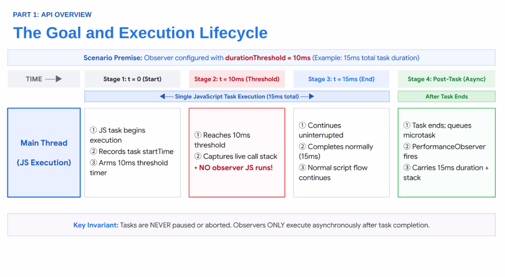
- … want to record start time and if it exceeds the 10ms threshold get the stack tracing
- … risk of leaking 3P state. Mitigating by truncating the stack, filtering out non-CORS JS frames
- … took in feedback from last meeting
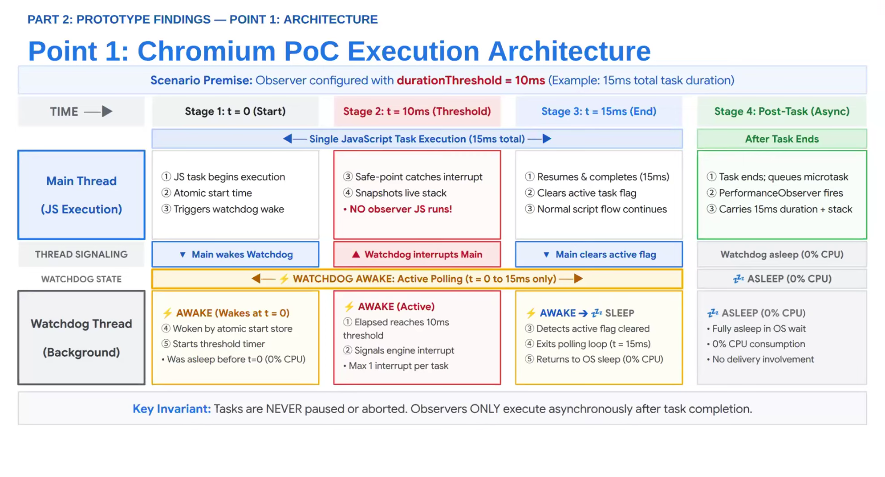
- … near zero overhead. *
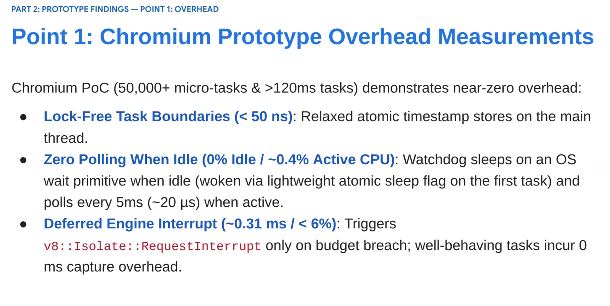
- … Want to add guardrails for slow devices to avoid overhead there
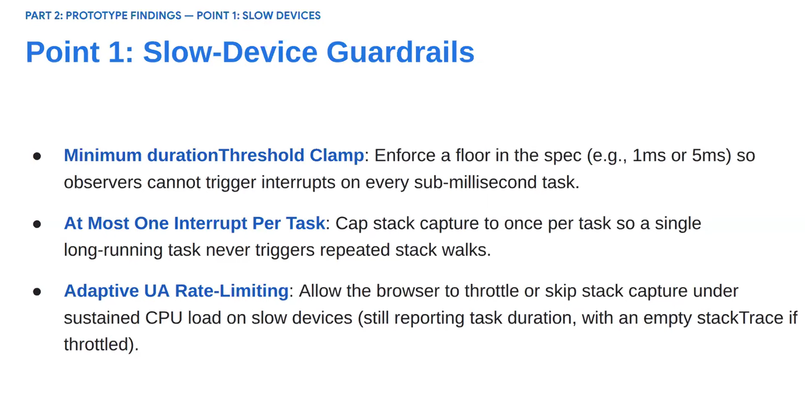
- … Few options for API shape: extend Long Tasks to support this, extending LoAF’s script attribution
- Fergal: We’d add a duration threshold to LoAF, so you’d e.g. set your LoAF threshold to 5ms to get traces. You’d also get LoAF entries in that cadence
- … The minimal tweak we can do. Seems like the preferred option
- Bas: lowClampInterval concerns. In windows below 10ms you need to go into power-hungry mode which impacts battery use. Both Firefox and Chrome already switch to high-resolution time, but extending that to any website that uses the API would be unfortunate.
- … changing behavior based on that mode would leak information
- … also 10ms JS is really common, so not necessarily useful
- … 10ms clamp would be easier and give you most of the value
- … 3% overhead sounds like a lot
- Fergal: Symbolization of the stack could be done lazily, we’ll try it out
- Nazim: can the script be destroyed by the time you look at the symbols
- Fergal: probably safe for LoAF. Would be missing if this happens, but developers can adapt
- Bas: Slow device guardrails seem reasonable. Overhead can be smaller
- Nic: default resolution for windows could be 15ms, not 10ms.
- NoamH: Used LTs to try to optimize performance, this adds more context.
- … Did you consider to add this to EventTiming or SoftNavigation, to know if it impacted the user
- Michal: This has come up many times. Can be solved with changes to the performance timeline to align related entries. Declarative performance observer can also help
- … Gouhui worked on initiators. Can be interesting to know why this task was started
- NoamH: Was it blocking the main thread while the user was trying to do something
- Yoav: Interesting to create that link, but it can also create jank that is user-visible
- NoamH: Correlation could happen on server
- Bas: Just specify LoAF marker, or all entries, whether there was a user-input pending when triggered
- ... Our hang telemetry also tells us when hang was sampled if there was a pending user input on queue
- Yoav: Maybe we can create links between relevant EventTiming entry
- Michal: If isInputPending, EventTiming entry would come in the future
- Matt: As a consumer, the stack trace directly helps us with visibility. On soft navs we get waterfall. Blindspot is often with LongTasks, we can see it blocking execution or delay, but we have to marry with profile locally. So seeing stack trace would be helpful.
- ... Being able to toggle the limit is helpful, our P50 doesn't catch issues, P90 would surface Long Tasks. So we have to throttle our profiles to find certain types of issues otherwise they don't manifest
- Fergal: Maybe a way to toggle short threshold via permission policy
- Yoav: Local flag that enables dev-mode that enables go into low threshold possibility
- Fergal: We'd have something always running in dev mode, popup could give immediate feedback
- NoamH: Local profiles are helpful for easy things, they usually don't capture really important things from user side
- Bas: Very often these situations are e.g. user extensions, somewhat opaque what's going on in cases anyway
- ... Risks of privacy and security concerns, hangs are indicative of ad-blocked
- ... Powerful thing is aggregate
- ... High threshold not that bad, it will surface from slow machines
- ... Aggregate of samples will still show bad problems
- Michal: Options for API shape, Long Tasks proposal is just dead on arrival. LoAF is equivalent but a modern standards
- ... Duration threshold has been requested because folks want to understand main thread smoothness
- ... LoAF has internal policy of min50, but any frame that exceeds budget. Anything under e.g. 60 FPS without rAF polling
- Michal: Other advantage with LoAF is we have problem with invoker attribution, wrapper scripts / RUM, if you did every script that's long, that could give you the ability to automatically see where time went
- ... Entry point to first party and omitting parties etc
- ... Also benefit of integrating with Profiler API. In CL, Profiling API is explicitly started. We could extend this to give samples at discretion and wait for e.g. 5ms boundary. Then permissions-policy and format of samples would be there etc.
- ... Both viable
- Yoav: Shoe-horning this into LoAF would have benefits as well
- Michal: Duration threshold in this case, each observer you could see how much you want to be woken up and observe
- ... Whole page will end up sampling, it's global
- ... Can't have 2 observers w/ 5ms and 20ms
- Bas: I highly doubt we'd implement Sampling API
- Fergal: Next steps are to prototype this as an extension of LoAF
- Michal: Infrastructure of integrating Profiling API may not be that difficult, you could do both
- ... I think going down to e.g. 1ms would be a profiler extension
Prefetch activation beacon
Recording:
Recording
Slides:
Summary:
- Proposal & Motivation: Jiacheng proposed a browser-sent beacon that tells the origin when a prefetched page is actually activated. The server opts in via an on-prefetch-activation response header naming a same-origin endpoint, replacing unreliable client-side JS beacons. Yoav noted it complements the client-side Speculative Load Measurement API.
- Credentials, Service Worker & Privacy: Ben called freezing a cookie-jar snapshot complicated and suggested credential-less beacons or evicting the prefetch when cookies change. Jiacheng said privacy reviewers were hesitant about credential-less beacons and agreed eviction may be better. Bas asked why the Reporting API or aggregate hit rates aren't enough. Ben and Yoav said per-activation signals are needed (e.g. ad-click legitimacy), and Bas raised the user-privacy implications.
- Next Steps & Follow-Ups: Jiacheng will implement a first version and run an Origin Trial to gather data, then revisit cross-browser agreement. Evicting the prefetch on cookie-jar changes will be explored as an alternative to freezing cookies.
Minutes:
- Jiacheng: aiming to help the server understand if a prefetched page was activated or not
- Yoav: There's some perceived overlap between this and Speculation Load measurements, both loading prefetches, client-side vs. server-side
- ... They can be complementary
- Ben: We are also working on a prefetching system similar at the app layer, loading web views is slow
- ... We have run into similar issues, knowing if page was actually loaded
- ... Seems very topical and relevant
- ... One concern here is freezing of cookie jar, seems complicated, could you just make these no-credential requests instead or if a cookie jar change happens, you just evict the prefetch and throw it out
- Yoav: Yes and if servers need credentials they could store them in the token/link
- Ben: For us in the world of being in the app, when we're prefetching, we don't have full access to cookie jar because web view isn't loaded yet
- ... Seems like a complicated thing to snapshot cookies
- Jiacheng: Agreed. When we asked server privacy team, can we send credential-less? They were hesitant. May exploit when user is navigating in privacy mode/anonymous mode.
- ... Proposal about evicting activation beacon (and fetch) when cookie jar changes may be a better way
- Yoav: The problem if you add to query params, it's now visible in logs
- ... Have to keep an arbitrary map on server-side
- ... Assume prefetch if the cookie changed in the meantime, prefetch may not be the right state, dropping it makes sense
- Bas: Can we use Reporting API?
- Jiacheng: Always go through Service Workers and render process
- Bas: Is that bad?
- Jiacheng: We wanted to be immutable for Service Workers
- Yoav: What's the threat of going through SW
- Ben: For server keeping map, seems like you have to do that anyway
- ... That these are real beacons and not fraudulent beacons
- Bas: Why does the server need that? Aggregated hit rate OK?
- ... Would server need to connect activation with the prefetch request itself?
- ... Aggregate numbers be sufficient?
- Yoav: Some pages prefetch well and some don't
- Ben: Use-case where we care about is from an ad-click, did the page load from user
- ... Signals go into "is this legit"
- Bas: If the prefetch is not on the origin of the page directing, and there's an outward navigation, the sending page can't have the activation anyway, just receiving end
- Ben: Before prefetch, servers got request, link conversion
- ... In prefetch you don't know if it sat in a cache somewhere and was thrown away
- Bas: Increases user-privacy aspect of it
- ... Page Loads can do JS beacon or something like that
- ... Origin can find out
- Jiacheng: Next steps: implementing a first version and doing an Origin Trial, we'll collect data about this. Then see about agreement in implementing this.
Monitoring working vs. idle
Recording:
Recording
Slides:
Summary:
- Proposal & Motivation: Fergal presented an updated explainer for measuring unwanted "work" vs. idle time, motivated partly by Chrome's UI moving to HTML+JS and needing to stay idle. The goal is high-level metrics plus attribution of what initiated the work. Building on LoAF would require delayed or aggregated emission, since processing an entry every 50ms would itself defeat the goal.
- Discussion & Feedback: Matt said Shopify already measures idleness app-side, and common heuristics would help, though interactions and analytics beacons complicate them. Bas stressed long idle periods: is the site actually doing nothing? Michal suggested LoAF summaries with totals for all scripts and metadata only for scripts over 5ms. Yoav raised network and radio wake-ups as relevant but complex and privacy-sensitive.
- Next Steps & Follow-Ups: The group leaned toward LoAF measuring everything but coalescing reports, e.g. a summary observer emitting about every 60 seconds or integration with the Declarative Performance Observer. The work was also linked to the congested-moments proposal. No explicit owners were recorded.
Minutes:
- Fergal: talked about this a month or two ago. Updated since
- … as a user hate the fact that battery and CPU are used accidentally
- … changing Chrome’s UI to JS+HTML and need it to be mostly idle. Want to monitor that and know when problems arise
- … A lot of things can generate work: JS, animations, network, storage? Waking up the radio is also bad for battery
- … don’t want to count things triggered by the browser unrelated to the page
- … Need to separate good/intended work from unintended work
- … High level metrics + debugging data
- … Want to be idle sooner and remain idle longer
- … Related to a profiler but we only care about what started the work, not the bottom of the stack
- … Prior work: battery usage
- … would get an entry for every script that run and build aggregation from that data
- … Aggregated data is nice, but this gives us a primitive
- … LoAF integrates with the perf timeline and enables understanding when things happened and enables correlation with other events
- … script duration at 0 + LoAF at 50 - get a LoAF entry of all the things that happened
- … Some work every 50ms to deal with the LoAF entry, which defeats the goal
- … Maybe we should delay emitting these containers
- … There may be pending work not yet aggregated you’d want to poll when navigating away
- … Could also add it to the JS profiler, with shallow stack traces but without sampling
- … same problems around aggregation
- Matt: Measuring idleness we do on the App side. Paying attention to long tasks, network
- … targeted towards navigation, not interactions
- … look at LT, layout shift
- … Would be super helpful feature. When you reached idleness you want to know when and how long
- … Tricky bit - could be something that the user does that takes you out of idleness
- … but common heuristics would be super helpful
- … May not care about certain events (e.g. sending analytics beacons)
- Fergal: would it be OK to use the performance timeline to ignore the periods you’re beaconing?
- Matt: Kind of what we’re doing already. Could have a couple of different measurements
- Bas: “when you’ve reached idle, the user starts interactions”. What’s interesting is long idleness periods. What happens when the website’s just sitting there? Are you actually not doing anything?
- Michal: In terms of measuring what did happen, it’s easier to say “we had a paint” vs. “we’ll never paint again”. Another use case, when can I jank the page with a long task.
- … For LoAF integration, as soon as something starts to happen if we don’t meet thresholds we throw all that work away
- … We could also sum up the total durations and expose those
- … How often would you sample and when would you report?
- … If you’re mostly fast-running, you want activity in the latest time period
- … You get a hindsight view of work we did
- NoamH: So just retroactively analyze if there was drain.
- Michal: maybe every time a PO fired, it would come with that information
- … mentioned that you wanted to sample scripts down to zero
- … here you’d get metadata of scripts above 5, but summary for all scripts
- Fergal: If you have 100s of these scripts running, there could be duplicates. Maybe we can actually keep the full data and provide counts as well, and duration per script
- Michal: Common to yield every 5ms, but from your perspective that’s not good enough
- Fergal: still 100% CPU and it’s typically a bug
- Michal: Maybe LoAF should be extended to provide summaries
- Yoav: Mentioned battery and waking up radio, network-related work, LoAF you would see the script aspects of these things and style, but not those. Would that be good enough as initial step?
- ... Extend somehow?
- Fergal: Get style, layout, script is a ton of it. That's all kind of under the control of the developer, while the network fetch could've had packets coming in slowly
- Yoav: Analytics beacon is
- Fergal: You'd see some script to send it anyway
- ... Though Reporting API is not
- Yoav: Waking up network, here it doesn't matter, on mobile in cases where tethering on phone, etc
- ... Gets complex and privacy-sensitive
- Fergal: Deluxe version of this
- Michal: Only actionable parts and already exposed, are part of main thread
- Yoav: If you have a beacon every 10s, from JS
- Michal: You'd already measure from LoAF
- Yoav: Low-CPU work, but it's waking up network and battery, but it's complex
- Matt: Use-case of main thread being pinned, you need to close the tab
- ... Would this feature w/ declarative performance observer?
- Yoav: Yes but summaries somehow on client
- Matt: Sounds like we'd send a summary
- Michal: Can we just get LoAF to report everything? We can get it to measure everything, but could coalesce report
- ... Congested moment thing
- ... Maybe another observer, summary every 60 seconds
- Yoav: Implementation tied to LoAF
Speculation Rules @ Firefox
Recording:
Recording
Slides:
Summary:
- Firefox Status & Rollout: Sunil described Firefox's phased plan. No-Vary-Search support for the HTTP cache has shipped. Same-origin prefetch (list and document rules, all eagerness levels, inline and header delivery) is in Nightly, with cross-origin prefetch to follow once spec issues are resolved. Developers were asked to test with Nightly, and per-origin limits are planned.
- CSP for Header-Delivered Rules: A blocking question is whether CSP should apply to Speculation Rules delivered by HTTP header. Yoav, Bas, Nic and Barry argued it adds no security, since anyone who can set headers can also set CSP, and that it would push CDNs toward risky CSP rewriting. Anne's consistency objection (Preload headers respect CSP) was noted. The group favored a new http-header-src CSP directive for header-delivered features that bypasses CSP by default.
- Next Steps & Follow-Ups: Yoav will engage WebAppSec and the Fetch/WHATWG folks to reach a resolution. Sunil will write up the http-header-src proposal. Sunil asked for sites beyond Google Search that would use a site-provided anonymizing proxy for cross-origin prefetch; Ben and Yoav (Shopify) expressed interest.
Minutes:
- Sunil: speculation rules hint the browser what it can prefetch, prerender, etc
- … Can be declared by an HTTP header or in HTML
- … More expressive than the “traditional” link prefetch or preload
- … List rules vs. document rules
- … eagerness level determine when the speculation happens
- … Shipped in Chromium, implemented behind a flag in Safari
- … NVS is an HTTP header that tells you what query params can be ignored for caching purposes
- … Not specific for speculation rules, but important
- … NVS shipped, compatible with other implementations
- … same-origin prefetch, already support
- … working on improving the WPT scores
- … Want developers to test their sites with Firefox nightly
- … Challenges - excessive prefetching. Plan to add origin-based limits
- … One issue that’s blocking us - should speculation rules be delivered regardless of CSP?
- … We don’t want to ship something that would break a lot of websites, but still contention internally about what to do
- Viktoria: brought this up at WebAppSec - should CSP apply to speculation rules?
- … for inline script, script-src applies
- … Response header is CSP exempt
- … external script CSP decision pending. Proposing to add speculation-rules-src
- Yoav: Given that anyone that changes headers can change CSP headers, I don't see the security benefits of applying CSP to header-delivered Speculation Rules
- ... It makes sense to have whatever options that are HTML delivered, to give the full script fallback chain, but for headers we want a full exemption
- ... Unless there's a threat that this can solve
- Sunil: This was what was implementors believe, but they wanted consistency (fetch from CSP)
- Barry: Anne's point was Preload headers respect CSP, so why is this different
- Bas: Can we stop CSP for Preload headers then
- Barry: There were a few others to respect CSP
- Yoav: What is the benefit other than spec consistency?
- Nic: modifying CSP headers on the fly to allow this is full of footguns
- Yoav: An attacker would just drop CSP
- Barry: CDNs would have to modify CSP to affect this
- ... and/or add add 'self' which would reduce security
- Ling: He was hoping to have consistency across the headers, but Anne advocated for consitency
- Bas: No objection to consistency, but let's make it consistent in a way that makes sense
- ... Can't think of a threat vector where modifying CSP in the header would be more challenging somehow than injecting Speculation Rules
- ... No added security as far as I can tell
- Sunil: Speculation Rules use by script
- ... Why do we want same directives for both, fetch() vs. JavaScript
- ... Can we use a different directive?
- ... Safer fallback for CDNs for non-breakage
- ... One option is using a different directive from header
- Yoav: We could apply it to all things that are header-based
- Sunil: We can think about it more and propose in discussions
- Barry: Option to exclude completely, or we have a http-speculation-rules-src which falls back to nothing?
- Yoav: Nothing. Always falls through, would give spec consistency
- ... If we come up with a threat model, then we would hookup
- Barry: If specified, we have CSP, otherwise no
- Yoav: Or "http-header-src"
- Sunil: Worth proposing for people who like consistency
- Barry: On-page on, the only thing to be aware of is it's changing the name of the directive, so some sites will need to be upgraded, only ~340 sites when I checked
- Yoav: Browser change-management problem
- Barry: We can have either inline or script-src, relatively agreed and less controversial
- Sunil: One more proposal here, http-header-src
- Viktoria: Agreed
- Bas: Where there no other objections?
- Sunil: Only consensus was in WebPerf, only opposition in WebAppSec
- Yoav: We decided on our position and we'll continue with WebAppSec
- Ling: I hope we can use TPAC to gather resolution
- ... Joint meeting?
- Yoav: Don't know WhatWG schedule, objection is coming from Fetch() spec
- ... Will try to connect and find resolution
- Hiroshige: We'd still apply this to script element and src
- Yoav: Yes, some tweaks to directives
- Hiroshige: In terms of consistency it makes it different, we get some consistency in applying CSP to all header requests
- Yoav: We'd define a new CSP directive for HTTP header-defined things, i.e. 'http-header-src', but they'd get CSP bypass by default
- ... For HTML-based, for script-src and inline, there are some changes to current directives from Chromium, but still subject to CSP.
- ... From developer, Preload that are HTML based will be, Preloads in HTTP won't be, etc for Speculation-Rules.
- ... Alignment with threat model that CSP handles
- Bas: What would CSP directive for header-defined things apply to?
- Barry: Preloads, Speculation Rules, Reporting API, Early Hints
- Yoav: Consistency is CSP for all header things
- ... Directive in spec but not necessarily set, an internal enum value that is bypassed now, but one day we have the means to do that
- Ben: Sunil does this include any cross-site privacy-preserving proxy?
- Sunil: Problem with cross-orign prefetch, we need a privacy proxy
- ... Tightly coupled to browsers, which means only browsers that can afford a proxy can do this
- ... Raised a bug suggesting a website-provided anonymizing proxy
- ... Spec and proposal shows how it's made possible
- ... Question: Apart from Google Search, are there any other interests in websites who would be interested in this?
- ... This enables any website to get benefits from this, gives browser opportunity to use its own proxy
- ... Good for prefetch and speed, for cross-origin prefetches
- Bas: Hopefully people will demonstrate interest
- ... In current situation, a company that owns a search engine and browser, offers the ability to offer a better experience than others have
- ... From my perspective this is a "we have to do this from principle"
- Ben: We are working on prefetch things, we've worked on a proxy in those contexts, might be reasonable to re-use
- ... Curious if there's any privacy aspects of this
- Barry: Normally tied to website, instead of tied to engine
- ... You'd always use the website-provided proxy
- Ben: Chicken and egg problem, hard to get justification for capacity investment for it
- ... Need public examples
- Barry: I has blog post
- Yoav: Currently doing same-origin prefetches, we could do cross-origin for other Shopify-owned properties
- ... Useful for search engines and social networks
- Eric: Covered by the same certificate perhaps?
- Yoav: Not in this case
Living standards
Recording:
Recording
Slides:
Summary:
- Problem Statement: Barry showed that the Timing Entry Types Registry (#26) has an outdated WD alongside a newer ED, creating a "link salad". More broadly, many widely supported WebPerf specs are not RECs (e.g. Nav Timing 2), and the charter dates are optimistic.
- Discussion: Ben, Bas and Michal supported living standards, since outsiders can't tell where things stand. Carine explained that any REC can now be a living standard by amending it, with new features marked as candidate amendments, and that old RECs can be retired spec by spec. Current CRs need only proof of interoperability to reach REC, while HR-Time and Nav Timing must reach CR first.
- Next Steps & Follow-Ups: The group agreed to move to living standards. The remaining work is to convert specs one at a time so a single current spec replaces near-duplicate levels (e.g. User Timing). Per Barry's follow-up on #26, the registry will be folded into Performance Timeline and the registry repo retired.
Minutes:
- Barry: Timing entry types registry with all the buffer sizes
- … out of date! Updated it, but we’re generally bad at updating it
- … We have a WD and an editor’s draft
- … We should add this spec, avoid having two different versions
- … There’s a link salad
- … Can we just make this a living standard?
- … Should this be a CR? Should this be a spec?
- … Other specs are in the charter, but we haven’t moved them enough
- … Old specs that are supported everywhere are not yes a standard
- … NavTiming1 is a REC. NavTiming2 is not a recommendation
- … UserTiming2 is a REC, UserTiming is a CR
- … same thing with HR-time
- … Can we move these things forward?
- … Delivery dates are also highly optimistic
- Ben: As a user of the specs, I’d love them to be living standards
- Barry: MDN links to the ED, which is good and ridiculous
- Alex: Benefits from REC?
- Barry: consistency
- Alex: in some groups, it’s important to close things, so that govs can use it. Is it important here?
- Bas: people at Mozilla get a fair aount of flack about WebPerfWG not doing this very well
- … hard for people not involved to understand where things are
- Barry: Living Standards would make things simple. HTML is one spec
- Michal: +1 to simplifying. Decided that we should integrate things into specs, mark new things at risk. We’re not perfect, but we’re better prepared to have living standards
- Bas: What’s the definition of a Living Standard? What’s the difference between CR and LS?
- Carine: there are two kinds of LS. One is staying forever in CR and the other is to go to REC and amend.
- … Added features need to clearly marked as a “proposed amendment” vs. “candidate amendment”
- … Tooling was lacking for amending RECs. One thing that was in the process before is that an existing REC can be changeable
- … So every REC can now be a Living Standard
- Barry: So for the registry, can we bring it to the group.
- Carine: The TAG has an issue template to retire old RECs
- ... Spec-by-spec, we should do this one-by-one
- ... If we really don't want people to use this, it's obsolete
- Yoav: In cases of User Timing, we don't want two different specs that are slightly the same, we want a single spec so people don't land on an old thing
- Carine: When you go to User Timing without Level 2, the CR is not so visible
- ... Recommend get current CR to REC
- ... Just requires proving this thing has interoperability
- ... High Res and Nav Timing they need to get to CR first
- Bas: If we go this route, and we make things into CR with Living Standards, does that mean there are more interop requirements when trying to add things to Living Standards than currently, vs. existing Editor Drafts
- Carine: It's the same
- ... Follows the same process
- ... If you have proven this is interopable, then move to proposed amendment
- Bas: On Editor Drafts, we don't prove things are interopable before putting them in
- Yoav: We talked about adding at-risk annotations when adding things
- Michal: That would be CR
- Yoav: I think we want to update CR vs. REC, the amendment process sounds heavier
- Carine: It's specific markup in document is all
- ... It's at-risk until it's proposed amendment
- Yoav: Generally I think we all agree we should go there, just work needed
Cross-origin redirect measurements
Recording:
Recording
Slides:
Summary:
- Proposal & Motivation: redirectStart/redirectEnd now respect the destination's TAO, but unattributed navigation overhead from third-party redirectors remains opaque (Shopify sees wildly varying redirect times). Yoav proposed a redirector opt-in (e.g. Redirect-Timing-Allow-Origin) that exposes per-hop URL, timings and Server-Timing via a redirects array on PerformanceNavigationTiming. He also proposed a Redirect-Reporting header that sends redirectors their own client-side timing.
- Discussion: Yoav clarified that redirectors get data only about their own hop, and full-chain visibility requires every redirector to opt in. AlexCone questioned whether redirectors have the incentive to improve. Eric suggested async or ping-style redirects to skip chains entirely, which Yoav supports as complementary. Michal asked whether aggregate (CrUX) data suffices; Yoav wants both aggregates and per-redirector diagnostics.
- Next Steps & Follow-Ups: No objections were raised. Eric noted the security aspects still need review, and Yoav's next step is to move toward shipping.
Minutes:
- Yoav: Optimizing cross-origin redirects
- ... Previously talked about fixing redirectStart and redirectEnd
- ... TAO applying to destinations rather than source
- ... This has landed
- ... Optiming into the end of the redirects chain
- ... Great but not necessarily sufficient
- ... When someone is running their own cross-origin redirector
- ... For Shopify this helped us get internal redirect timings
- ... UNO, unattributed navigation overhead
- ... Time for storefronts, assign it based on referrer
- ... Timing for those redirects varies wildly
- ... Ways to know something is funky, but no way to get data that will help you resolve them
- ... Use-case: Cross-origin redirectors leading to my site
- ... If multiple-step redirects, I can't know more
- ... No opt-in from redirector side
- ... Use-case: Operating cross-origin redirector, how slow am I?
- ... Provide ways for a redirector to opt-in to provide more information to destination, beyond just Referrer
- ... Share ServerTimings or details that will help me tell redirector what went wrong
- ... Talked about multi-redirect fetches
- ... Would be great to know redirect URL, ServerTiming, etc for each hop
- ... Go beyond TAO
- ... Straw proposal
- ... Want redirectors themselves want to do with this
- ... Reporting API header that can send client-side time, maybe ServerTiming
- Alex: If we allowed redirectors sending themselves reports, based on full experience
- ... Would end destination have to opt in to receive those reports
- Yoav: Haven't thought about that
- Bas: I think you'd have to
- ... Let's say redirect chain on destination origin is dependent on logged-in
- Yoav: No information about redirects timing of destination origin, just the redirect fetch itself
- ... Publisher --> ad net 1 --> ad net 2 --> merchant
- ... Get information about ad net 1/2
- Bas: Stays within same origin
- Yoav: Only get details of their own origin
- Alex: A lot of what I see as a user, ad net 1 --> ad net 2 --> ad net 3,4,5,6 --> destination, may want to tell ad net 1 that they should just redirect to destination
- Yoav: Would require opt-in to the full chain
- ... Expose their data
- ... The destination could collectively yell at them
- AlexCone: Destination could may have put all of these redirects because they're tracking multiple things
- Eric: Good idea to show how much they're hurting
- AlexCone: I'm not sure ho incentivized
- Eric: Some things they could do to make those redirects much slower, there's some floor, we're saying the existence is a problem
- Yoav: Same storefront, different redirectors, some of them are order of magnitude slower than others, not just RTTs
- Eric: Would there be interest in doing an async redirect e.g. in podcasts, a ping, we potentially cache redirect chains anyway. Jump to step 6 and save the user many seconds.
- ... But if there's a way to get metrics, without slowing user down
- ... Can we do something to make these be removed?
- Yoav: I think we need both
- ... Highly supportive of ping header
- ... Won't solve all, but would make it easier
- Michal: The simple original proposal, sometimes users choose to share links thru services
- ... With Chrome sharing through CrUX, is that enough
- ... For each redirector
- ... You mostly want the aggregates
- Yoav: I want aggregates, ability to tell redirector what they're doing wrong
- ... Large contingency of no-referrer, but the rest you can deduce what it is, UNO is mostly that
- ... Really link ping header
- ... Ad networks could control ad spend
- ... Any objections?
- (none)
- Eric: Need to review security aspects
- Yoav: Next steps: Ship it
Lightning talk: client-side redirects and reporting client-side redirect count?
Summary:
- Proposal & Motivation: Ben noted that client-side redirects are undefined, so RUM and analytics tools misattribute trampoline pages as landing pages. He proposed a definition based on Privacy Sandbox work: a renderer-initiated navigation (JS, meta refresh, or Refresh header) within 10s of load with no user interaction. The count would be exposed as e.g. clientRedirectCount next to redirectCount in Navigation Timing for opted-in destinations.
- Discussion: Yoav agreed it's a blind spot, though it's unclear how common client-side redirects are (examples include link shims and CDN bot checks). Bas flagged privacy and cross-origin opt-in as the hard parts. Matt and Nathan raised bounce-tracking and anti-abuse concerns, and Barry noted that some redirects are timeouts.
- Next Steps & Follow-Ups: Ben will likely start with a count only, mirroring server-side redirect opt-in requirements. If the cross-origin redirect measurement work gains traction, client-side redirects will be integrated into it.
Minutes:
- Ben: Some of our reporting is similar to RUM analytics
- ... Client-side redirects not defined at all, really easy to misattribute a trampoline page as a landing page
- ... Another spec from Privacy Sandbox talked about client-side redirect definition
- ... Interested if client-side redirectCount
- ... For proposal here, final destination page knows for sites that opt'd in, get information about client-side redirects
- ... Is this interesting data?
- ... Not having a definition, everyone does their own thing, slight differences that causes skew in data
- Yoav: How often do we see client-side redirects, I don't know
- ... Correct that this is a blind-spot
- Ben: A definition: If the site does a renderer-side navigation (JavaScript or <meta> refresh or header) within 10s of page loading, and no user-interaction.
- AlexCone: Primary use-case?
- Ben: Yes link shim, if you're leaving a page and it confirms
- Yoav: CDN Are you a robot running JS tests then redirects you
- Ben: Interest?
- ... Sounds like it's a blind-spot
- Bas: Hard parts are privacy
- Ben: Not sure it's different than server-side redirect in count, starting with that
- Matt: How would you expose it?
- Ben: NavigationTiming there's redirectCount (302, 307 server-side), sibling clientRedirectCount and
- Bas: How would you opt in cross-origin?
- Yoav: You'd need same
- Ben: Motivation?
- Yoav: Internal motivation, redirectors to expose that data to customers
- Ben: Anything for server-side I'd mirror for requirements
- Matt: We have some client-side tracking, we do it to try circular bouncing
- Yoav: But it's our own client-side redirects
- Ben: We could put a limit on client-side redirect chains
- Barry: Also have redirects that timeout
- Ben: Most interested in happy path, analytics, want access to more than cookie storage
- ... Definition is going to be a little fuzzy
- ... Bounce-tracking was around ad-analytics
- Nathan: Anti-abuse is becoming a big problem
- Yoav: NavigationStart won't change
- Ben: Maybe count, maybe we can do something if X-O redirect stuff gets traction we'll integrate
Single resource, multiple fetches
Recording:
Recording
Slides:
Summary:
- Problem & Proposal: Early Hints preloads report the later cache-read timestamp rather than the actual 103-triggered fetch, and regular preloads report only the initial fetch. Rather than exposing two entries linked by a resourceId, Yoav proposed a single entry with the initial fetch's timestamps plus a "used" signal. Early Hints timestamps would be buffered until the document exists, which also surfaces late discovery by the preload scanner.
- Discussion: A promise that resolves on use was debated. NoamH and Jase raised memory-leak concerns, and Michal suggested general infrastructure for observing an entry change over time. The group converged on a .used timestamp attribute, with a single "completed" promise or observer callback.
- Conclusions & Next Steps: Yoav concluded that the extra data is useful, has no back-compat implications, and needs no opt-in. getSpeculations().preloads is still needed to find unused preloads, and preconnects remain under getSpeculations().preconnects. No owner beyond Yoav was recorded.
Minutes:
- Yoav: Started with Early Hints preloads, timestamps were getting of the use, not when it was actually emitted
- ... Also times when resource fetch started, doc may not be alive at that point
- ... Early Hint script will report time it was actually read
- ... Resource Timing entry turns into a fetch(), multiple fetches in the algorithm
- ... According to spec, we should've reported two entries: Early Hints + Consumption
- ... Preloads today only report initial time, only fetch()
- ... We can expose both fetches but that will confuse the current consumers
- ... Align on initial fetch but then we don't have use time, may be useful
- ... Other expose both, two entries, may need resourceId
- ... Related to resourceStart proposal, talked about earlier this week
- ... Now the thing Noam proposed which aligns with resourceStart, single entry with promises with when it was used
- ... Returns timestamp when that actually happens
- ... Remains unresolved forever if it wasn't used (not awful)
- ... Backward compatible, move Early Hint preloads to report initial timestamp
- ... Can buffer those timestamps until document is actually alive (seems feasible)
- ... Preload scanner fetches in terms of fetch vs. consumption
- ... If resource was discovered late, could tell you about places you can optimize
- ... Main question, related to Speculative Load if we have that data, do we really need getSpeculations().preloads
- Alex: Promise that resolves when it's used
- Yoav: resourceStart to have a resource entry relatively early with incomplete data, with a completed promise when it resolves the entry is done, await completed and get timestamps
- Alex: Seems reasonable there
- ... Less here, which preloads are used, resolved all promises, setTimeout(), see which ones are heavy and weird
- Yoav: Maybe we also want used timestamp in both
- Michal: Promise not needed, decouple ergos
- ... PerfObserver has mechanism so you don't run observer until later
- NoamH: Not chaining, using it for own telemetry
- Yoav: You don't have to resolve the promise at point of use
- ... When you would have fired performance observer with ergonomics
- Michal: More interesting question, promise is resolved when it gets used, resource request initiated for same resource
- NoamH: If there was never one, promise was resolved
- Yoav: getSpeculations().preload could be useful still
- ... You can await and it never resolves isn't ideal
- NoamH: Could it be a leak?
- Yoav: Memory?
- NoamH: Yes
- Jase: Same concern as well
- Yoav: .used attribute as a timestamp, hang everything on completed promise
- Michal: Get a RT entry as early as possible, then timing observer calls, we could choose how often to trigger
- NoamH: Could auto-resolve on timeouts
- Yoav: Seems awkward, don't need promise, .used timestamp, single completed
- ... Need to know when started and ended
- ... Don't need steps in-between, promise or observer call at end
- Michal: This problem of observing a single entry change over time
- ... We could add infrastructure to PerformanceEntry
- ... Speaking of multiple fetches, wasn't there also an issue where multiple things request at same time
- ... Two images
- Yoav: Single entry, single fetch, de-duped in HTML
- ... Script is a different story, executed twice
- ... Maybe we can have an attribute on script, execute only once
- Ben: Doesn't image cache honor Cache-Control headers
- Yoav: I don't think it regards Cache-Control headers
- Ben: Or link=render cache
- Yoav: Memory cache does not care about Cache-Control headers
- Michal: The values we provide are a mish-mash of different things, this would simplify confusion
- Yoav: Extra data is helpful
- ... No back-compat implications
- ... No need for an opt-in
- ... For the final question, do we still need preloads? Yes, it's hard to get unused values from this list. Still need an explicit exposure of preloads
- ... For preload scanner fetches, .used would be filled in
- NoamH: For preconnects?
- Yoav: There's .getSpeculations().preconnects
- ... Not a ResourceTiming issue
Speculative Load Measurement API
Slides:
Summary:
- Proposal & Status: Yoav gave an update on performance.getSpeculations(), which reports which preconnects, preloads, and Speculation Rules prefetches and prerenders happened, and whether they were used. It is in a Chrome Origin Trial, Shopify is already using the data, and Yoav hopes to ship it in Chromium soon.
- Discussion & Concerns: Ben noted much of the data could be polyfilled with a ServiceWorker; the exception is whether a (cross-origin) navigation was actually prefetched. Bas raised the privacy risk of leaking device state if speculation is skipped for low memory or battery. Ben and Nic asked whether these should be Performance Timeline entries
- Next Steps & Follow-Ups: Yoav will open an issue on exposing this as a Performance Timeline entry type, possibly using an RT-based shape for preloads and a different model for preconnects and navigations. He will also look into a used signal for preconnects and keep gathering OT feedback.
Minutes:
- Yoav: Update on where we're at
- ... Goal to understand speculative loads and how they're used or unused
- ... Unused preloads
- ... For prefetches it's hard to know when they're used, same for pretenders
- ... Doesn't take into account the cost, so we need to balance those things
- ... Enabling effectiveness of rules
- ... Has "url", "as", "crossorigin", "tags", "type", "eagerness", "earlyhint", "used" attributes
- ... Console message is speculative, this is at the time of the call, what happened until now
- ... Origin Trial in Chrome for a while
- ... Experimentation happened 1.5 months ago seriously
- ... Shopify is collecting and using data
- ... Very recent blog post from RUM Vision, and want extra bits of information about candidates of rules
- ... Making progress!
- Ben: In Speculation Rules, we had source, where at?
- Yoav: On source, all render-side information
- ... Navigations where a prefetch happened, which is why we don't have a used bit on navigation
- ... Were some privacy weirdness about exposing browser side information
- ... Cases where URL that was prefetched would not be used, timeout that was generous enough that it wouldn't happen, issues with not-vary-search with mismatches
- Ben: This list is prefetches that happened, if someone followed that doc would be gone
- Yoav: At pagehide you have navigation destination URL, same flow as Navigation API, you have where the page is going, there's high likelihood the navigation prerender will be used.
- ... Destination-side API would be useful, can compare from src to dest
- Siddhesh: Even if user isn't interacting, would we only preload with user's first interaction
- ... Netflix has thumbnails, sometimes people click, and didn't navigate
- Barry: This allows you to get visibility into over- or under-preloading
- Yoav: You can inject preloads at time of interactions
- Siddhesh: It can sometimes have an environmental cost
- Yoav: Goal is to reduce unused things, helps sustainability, performance, cost
- Michal: This is about measuring Speculation Rules, to reduce them
- Ben: This is not net-new information, you can polyfill with ServiceWorker
- ... Except navigations
- Barry: Didn't we exclude cross-origin from navigation side
- Yoav: Page can see where it's going
- ... User clicked on a thing, destination is exposed to Navigation API
- Ben: More about ergonomics, not net-new
- ... Only for speculative cross-origin navigation
- Yoav: Would include cross-origin prefetches
- Barry: Page knows and can listen on links
- Yoav: And can tell you if it actually made a prefetch
- Ben: Can't polyfill that today
- Bas: You could in theory, emulate browser's heuristics
- Yoav: So not reliable
- Bas: Most are currently deterministic
- Barry: In the fact that they're eligible, we don't prefetch in low-memory, battery, etc
- Bas: That could be a leak
- Barry: That case we'll see a prefetch was initiated, but cancelled, and won't see status in this
- Bas: Can you detect other conditions have been met, but it did not, so low-mem etc
- Yoav: This will report as prefetch happened, but it won't, conditions didn't enable it
- Bas: Timing attack, when you load actual URL
- Ben: ServiceWorker you can see that
- Bas: Matters whether you can extrapolate if the user is low-mem
- Barry: There's many other things
- Jase: getSpeculations() or called getUnused() instead?
- Yoav: Not just unused, all preloads whether they're used or not, hint as to what the destination
- ... preconnects can't get used attribute at the moment but maybe we could?
- ... In OT, want to get feedback, hoping to push in Chromium soon
- Ben: Existing timing APIs are lists of requests, these are also, should these just be PerformanceTiming entries that get created
- Nic: When would you add these to the buffer, at pagehide it could all change
- Michal: There's some precedence
- Yoav: Connecting this to previous discussion, this would have a .preload boolean to ResourceTiming, maybe add extra hints as to the other values
- ... preconnects and navigations that feels like a different thing
- ... Maybe add more NavigationTiming there, but that feels awkward
- Barry: Preconnect doesn't have any Resource
- ... Preloads we could sketch out what a RT-based would be, and see what happens
- Barry: Speculating whether we moved to ResourceTiming
- Nic: I wouldn’t want preloaded resources going into the RT list, if “used=false” it’s not a resource
- Barry: It’s still fetched
- Michal: Would this be better for existing? They just get data now?
- Bas: For Early Hints, they don't appear in RT at all, until used
- Yoav: We have a bunch of info here, tags/eagerness doesn't apply to others
- ... We'd also get timestamps that may or may not be useful
- Bas: They can happen before timeOrigin?
- Barry: Maybe that can open timing attacks
- Yoav: Will consider
- NoamH: Only for Speculation Rules
- ... link rel=preload
- Barry: preconnect/preloads are link (or in headers), navigation is only Speculation Rules
- Yoav: I'll open an issue to consider Performance Timeline / Observer entry
Paint/Event Timing & Shadow DOM
Recording:
Slides:
Summary:
- Problem & Proposal: Michal showed that the perf APIs treat Shadow DOM inconsistently (LCP #152, ET #3, CT #14). LCP drops the element, Event Timing retargets to the host, and Element and Container Timing emit nothing. He proposed retargeting attribution to the shadow host by default, with component authors able to opt in to inner details by passing a ShadowRoot to the observer (like MutationObserver).
- Discussion & Concerns: Bas asked whether entries would differ depending on who reads them, and raised buffer growth. Ryosuke argued that multiple paint entries from inside a shadow root would expose internals and that buffer limits must match the non-shadow case. Michal countered that resource loads inside shadow roots are already observable and that Container Timing offers a black-box container model.
- Next Steps & Follow-Ups: Retargeting to the host had broad support ("ship it"). The LCP question of how many entries and paints to expose per shadow root remains open; Michal will return to it and address Ryosuke's concerns.
Minutes:
- Michal: For years we've run into issues around Shadow DOM and how it's exposed in Performance Timeline
- ... Now in Container Timing
- ... Goal of Shadow DOM: Create a subtree, so scripts don't collide with component internals
- ... Host these in Light DOM, queries of main DOM or QSA or styles, including component from someone else can't trample each other
- ... Mechanisms to know whether you can open/close
- ... Meant to avoid accidents
- ... View of document on left is what you'd see, but you can teleport to Shadow DOM if you want
- ..designed as an authoring tool
- … interacting with the shadow DOM would still bubble up some events
- … event.target stops at the component boundary - “some interaction with the component”
- … Kinda leaked for open shadow DOM, but not for closed SD
- … Event timing mimics that behavior
- … Subresources loaded inside the shadow root are observable
- … what’s happening inside shadow roots is pretty much observable
- … goal - code running on the page cannot accidentally break the components
- … inner/closed are supposed to behave the same
- … also <video> tags are a “special” closed shadow root
- … LCP strips the element out, EventTiming does retargetting
- … mutationObserver can get info from shadow roots, maybe we should have an opt-in as well?
- Bas: would a shadow root have its own performance timeline, where things inside the shadow host are reported inside the shadow tree?
- Michal: single timeline, but either blackbox or
- Yoav: They will need to register an observer
- Ryosuke: Observer has option to take shadow roots, only those will receive the entry
- Michal: Similar to MutationObserver
- Bas: Similar to its own timeline?
- Michal: The PerformanceTimeline will have a paint entry, you'll get a default set of values, retargeted
- ... C++ is just hiding it from a specific reader
- ... We create multiple observers, depends on who's reading it
- Bas: Entry displays polymorphic behavior depending on who's reading it
- Michal: In Chromium we have a live reference to a node, we check at read time to determine if we return null or not
- Bas: For ContainerTiming, shadow root in DOM
- Michal: Observers that don't pass the key won't see it
- ... In my mental model, one timeline
- Yoav: Visibility is different
- Nazim: We already do this, we check if it's gone
- Bas: Implementation wise there might be some challenges
- Michal: Shadow Root does exist for other observers
- ... This is a new proposal, let's give visibility for component authors
- ... Rather than hiding all metadata inconsistency, match to host, that matches philosophy
- Ryosuke: LCP has to treat host as LCP
- Michal: Chromium matches to individual elements
- Bas: When should it be considered painted? 3 images in host, one larger, LCP will fire largest image (largest on page) but other 2 won't paint
- Ryosuke: Whole host is element
- Bas: Considered painted when 1st image or 3 images?
- Ryosuke: Maybe
- Michal: Didn't think it was a security boundary
- Ryosuke: But not meant to expose details of Shadow DOM to the world
- Yoav: Script could rely on those internal
- Bas: Let's say image element in Shadow Tree, has ID and outside has same ID, and searches by ID
- Yoav: Could consider image to be LCP element, but still give ID of the Shadow Host
- Michal: Not what we do today, but that's the proposal does today
- ... Observe that Host did something
- ... I do also think that ContainerTiming gives us vocabulary to say the component is a container, so ContainerTiming answers these questions for us. Wrap it in a black-box and represent stream of paints.
- ... Container as a whole represents its loading performance
- Bas: If container has half-painted, fire LCP, when it's bigger, fire another LCP entry
- Michal: I think ContainerTiming shows what container thinks its LCP is, we'd just take the nested LCP, like retargeting, paint retargeting
- Zap: could you change the granularity?
- Michal: With the SR reference
- Ryosuke: ????[a][b]
- Bas: could define for container timing that those entries remain buffered until a special observer with a ref observes them
- Ryosuke: and then we’re storing all that information
- Bas: we already are
- Ryosuke: The cap outside the shadow root can’t be different than outside it. It would expose things
- Michal: Creating a component should not opt out of the performance timeline. Heard from developers that they moved to WC and lost visibility
- … need to make sure that it’s not easy to do the wrong things
- Bas: but not for container timing
- Michal: hidden unless you have access to the thing
- Bas: challenge around buffered entries
- Michal: Same number of entries as if you didn’t have a WC
- Ryosuke: limit of the entries should be the same in both cases
- Bas: buffer grows by the amount of containers
- Michal: Won’t add to the buffer unless ??
- … I heard “ship it”
- … Ryosuke - do you agree that it’s fine to expose?
- Bas: multiple LCPs for the same root?
- Michal: already proposing that elsewhere. Everything in the root is one retargetted element
- Ryosuke: From outside you can’t tell there were multiple things
- Michal: You can with composed path, resource timing
- Ryosuke: you can’t hide resource loading
- … Can’t expose multiple entries inside a shadow root, because it would expose things about it
- Zap: look through slots?
- Ryosuke: slots would report it
- Michal: slots are part of the light DOM. Pushing back - a single element can have any number of paint elements today. Size can also be decoupled from its box
- … seeing that an element had multiple paints and different size doesn’t tell you much about it
- … image case - placeholder + replacement
- Ryosuke: but you can see that from computedStyle
- Michal: resolved a few issues, need to return to the LCP one
Lightning topics
- Matt: should we expose all event types? Yeah, that would be easier
- Barry: calling a one line in the console is nicer. But not using PO can cause you to miss
- Michal: should support lazy buffering. E.g. scroll timing read in the compositor
- … that means that your polyfill should not work
- Bas: async that returns a Promise
- Michal: same as current observe. We could wrap it with an observable
- … on buffering, we’re buffering needless things. We can only buffer important things
- … e.g. event timing can only buffer the events that matter
- Barry: spec issue where the check happened in the wrong place
- Michal: 150 interactions is enough
- … For RT, there’s a conversation for Declarative Performance Observer. Would be nice to link into buffering.
- … Maybe only buffer these resources and then they’d also go to DPO
- Nic: the registry has a list of all the defaults. At some point we raised RT from 150to 250. But it’s a bunch of random numbers
- … buffers were meant to only help until initial JS loaded
- Michal: want to say that the buffer should be consistent
- … best hundred is better than first important ones
- Michal: RT doesn’t tell us anything about the code that needs the resource and when it runs
- … resources fetched also can resolve promises, but it’s hard to link things
- … input delay of the script is the loading delay of the resource, and exposing all that could be interesting
- Yoav: Figure out a way to tie two entries together, or a single entry and add executionStart/End to ResourceTiming
- Michal: First thing that Noam wanted, tied them together without book-keeping, get in 1 tick of Observer, RT entry might be done and just adding the processing start time of the task that accepts it
- ... If that happens to go long, LongTasks would already report it
- ... Would already have in PT to give to Observer
- ... Or maybe this is what OTel is meant to stitch together and I just want the whole waterfall
- Matt: Heuristics of Soft Navigations
- Matt: Web-Vitals exposed for understanding hard navs, soft navigation with ICP
- ... What heuristics are people caring about
- ... 80% of navigations are soft
- ... Two metrics we've tried to define are an idle metric, visual stability of the page
- ... Clicking to when the page has finished
- ... We basically use a quiet-window algorithm, until we no longer see activity
- ... Data from browser means we have a best-guess, gaps or issues/challenges
- ... For us: Network activity, the main thread is not clogged, done painting (even though it's not best for stability)
- Barry: Page type affects it a lot. Soft Navs split out from product searches, going to server, vs. clicking Checkout which is fast.
- ... Considering variability between those two
- Michal: Important to use routing rules
- Matt: Segment by route pattern
- ... We're trying to instrument is generic by nature
- ... Pages compared apples to apples
- ... Manual instrumentation, slightly different definitions of stability
- ... People seem overly optimistic or penalize each other
- ... Or code change slightly shifting metric, just moved demarcation slightly
- Michal: ICP currently sees everything that’s painted but honing in on largest.
- … maybe we’ll start reporting every single paint, so you’d be able to notice that paint updates are starting to taper off
- … May report paints without size changes
- Bas: Could create a lot of GC churn
- Michal: would have to update text or images regardless of animations
- … folks asked for “when is it fully visually stable”. Stretch goal
- Bas: container root specific APIs could have an indication on the last time anything in this container changed
- Nic: “visually complete” would be great! Boomerang did something similar to what you’re describing. RUM providers try to tailor that for the generic page. Heuristics based on signals we have, which isn’t a lot.
- … gave a lot of visibility into perroute metrics.
- Michal: useful to track resources initiated by the interaction
- Matt: yes
- Bas: concerned about growing size of headers
- Eric Kinear: security vulns in the parsers. Valid concern. Header compression is on, but have to send it once. Pieces around NEL that this shares, so would be good to share solution
- Weird to block content with headers that aim to optimize
WebPerf / AI future
Summary:
- Framing: Yoav opened a discussion on how AI affects the group. Topics included measuring agentic experiences (e.g. a PerformanceObserver for WebMCP, "Web Performance for the agentic web") and the shift of RUM analysis to AI. His thesis is that reproducibility and fast iteration loops will matter more than attribution. Ben, Nic and Bas discussed the growth of unidentified bot and agent traffic and the value of segmenting it out of RUM data.
- Discussion Points: Bas argued agent-driven browsing needs very different metrics. Zap and Bas noted existing APIs like Event Timing could cover agent input, though thresholds such as 5ms may not fit. Michal raised measuring longitudinal user journeys, and Zap, Matt and Yoav discussed humans and agents acting on the same page, which makes attribution of entries to the agent important.
- Next Steps & Follow-Ups: No action items were assigned; the discussion was exploratory. The direction is that both lab and RUM feedback loops will matter more, with guardrails and well-lit paths for agents. Bas urged the group to be proactive given how fast AI is moving.
Minutes:
- Yoav: Affects this group in multiple ways
- ... Agentic-experience related performance measurements
- ... Performance Observer for that (WebMCP)
- ... Agentic experience measurement
- ... From RUM perspective, collecting data to throw on dashboards for human eyeballs
- ... Entities that are analyzing this data may be AI
- ... Open the floor to discussion on that front
- ... Current operating thesis, attribution matters a bit less, but reproducibility matters a bit more
- ... Providing them a way to iterate seems more important than a specific function to scan and make guesses on, but no way to verify
- ... RUM is a feedback loop, relatively slow
- ... Lab has been faster, attaching agents to both can have benefits
- ... How it changes things from perspective
- Nic: Prompt API breakout also discussed PerformanceObserver use-cases
- Ben: Do analytics folks see a change in analytics from increased number of bot traffic
- Yoav: try to filter Bots to the extent as they can
- Ben: More and more agents not identifying themselves today
- ... Arms race
- Nic: good discussion in RUMCG a few months ago. Lots of types of bots. Only crawlers self-identify. Even with agents with human-in-the-loop (or not), it can be useful to segment those users out.
- … CDNs may do fingerprinting to figure it out
- Bas: suspect telemetry that seems controlled by AI and not real users
- … can’t tell where they’re from
- … Geos that raise suspicion about server farms
- … Akamai seeing old firefox versions, that don’t seem like people
- … stuff is going on
- Nic: race to avoid blocking. No a lot of signal
- Ben: WebMCP - is this a new type of resource that people would need to optimize to make agent access faster?
- Bas: incentives to make agents cheaper. Interfaces for agents may differ from human
- Yoav: WebMCP is Web Performance for the agentic web
- ... New type of user experience that we need to optimize, we need a means to measure it
- ... Performance vs. correctness vs. cost
- Bas: Type of performance metrics that you need to measure those, are wildly different from performance metrics for human-driven browsing
- Zap: Existing metrics or measurements being rethought?
- ... Maybe the thing that becomes more relevant as well, I want to maximize actions per page
- ... e.g. 1m input events per second, can the page handle that
- Bas: EventTiming could serve for input events fro Agentic
- ... Ways you analyze them becomes relevant, 5ms floor may not work
- Michal: We could extend PerformanceObserving all of these things
- ... Timeline hasn't solved the issue of longitudinal user journeys
- ... Measuring single performance
- ... Did it take 100 clicks to do a job?
- ... Are we going to drive time in browser to help these things go quicker?
- Bas: Wasn't that always kind of interesting, might become more
- Michal: Individual sites have done so for themselves
- Yoav: Agentic measurement, we actually get a chance to talk to someone to tell us what is good
- ... Get the agent's view about
- Michal: I needed too many steps, not that steps took long
- Yoav: Get feedback from agent on needs
- ... Browsers with background-thread agents
- ... User-driven experiences
- Bas: Challenge is never how long running they are, opaque primitives, knowing what a user journey is, what describes the journey and what it is good, spaced in time, websites have different perspectives
- ... Then the question becomes do they have the primitives
- ... Browsers can do for agentic cases, less fast SPA navigation, wildly complicated, better primitives to establish how they work
- ... Agents interact not through input events
- Yoav: Creating a well-lit path that agents will use, try to minimize hacks
- Zap: If you have multiple agents and maybe a human operating a site at the same time, differentiating
- ... Independently important things
- Yoav: I can see interleaving
- Zap: Happening in parallel maybe
- Ben: Isn't that how AutoFill works today
- ... Expanding tab completion
- Zap: Figma open, with agent designing something
- ... Scenarios with parallel multi-player
- Bas: Even auto-completion waits for nms pause before acting
- ... I suspect that whatever it does while you're working, maybe summarizing while you're interacting in the page
- Matt: Same timeline if working in the same document, sharing resources
- Bas: Want to know triggered by agent
- Matt: Attribution question
- Yoav: All things end up in same timeline, just depends on what you're observing in PerformanceObserver
- ... Regular EventTiming with agent invoked
- Michal: Lab feedback loops, RUM feedback loops, I don't know if agents are going to get so good at shipping high-performance sites, that field signals just need to show wacky things
- ... Or does it go the other way, it goes into production faster and we need insurance policy because crazy things happening in the field
- Yoav: My guess is a lot of both
- ... Guardrails in place, do the right thing
- Matt: We need both, locally and optimized best we can for variations we see, confined to infrastructure we own
- ... Once it leaves, it may be different and we don't own it
- Bas: I need to be proactive, speed of evolution of AI is fast, difficult to predict web browsing
- Michal: I still have a job
[a]@mmocny@google.com @rniwa@apple.com do you remember the point made here?